บทความและข้อเขียน
ข้อเขียนของผมเรื่อง AI การศึกษา มหาวิทยาลัย การวิจัย และการพัฒนาคน รวมทั้งบทความจาก Facebook ที่เก็บไว้อ่านย้อนหลัง เลือกอ่านตามความสนใจ หรือค้นจากชื่อเรื่องและคำสำคัญได้ครับ
เมื่องานวิจัยเป็นภารกิจที่เลือกไม่ทำไม่ได้ ใครควรรับผิดชอบต้นทุน
ติดตามข้อเสนอทรัพยากรพื้นฐานสำหรับงานวิจัยที่ผู้เขียนแจ้งว่าได้รับการบรรจุเป็นวาระสภามหาวิทยาลัยเดือนตุลาคม พร้อมคำถามเรื่องต้นทุนที่องค์กรควรรับผิดชอบและความเป็นธรรมของการประเมินเมื่ออาจารย์ต้องทำผลงานตามเกณฑ์

เมื่อ AI อาจทำให้มนุษย์กลายเป็นทรัพยากรส่วนเกิน
เมื่อ AI อาจลดความต้องการแรงงานอย่างรวดเร็ว รายได้ กำลังซื้อ และบริการสาธารณะจะปรับตัวอย่างไร และสมดุลที่มีประสิทธิภาพสำหรับระบบจะทำให้มนุษย์อยู่ได้หรือไม่

เมื่อ Buffer ของครอบครัวหมดลง คนรุ่นใหม่จะพึ่งใคร
ข้อกังวลต่อครอบครัวไทยที่รองรับการว่างงานและรายได้ไม่พอของคนรุ่นใหม่ เมื่อผู้หารายได้แก่ลงหรือเจ็บป่วย ขณะที่ AI อาจลดงานเริ่มต้นและเศรษฐกิจยังต้องหาทางสร้างงานใหม่

ค่าตีพิมพ์ การอ้างอิง และโอกาสที่อาจไม่เท่ากันในวงวิชาการ
ข้อสังเกตจากการวิเคราะห์ความสัมพันธ์ระหว่าง APC กับการอ้างอิงของวารสาร ชวนพิจารณาว่าทุนสนับสนุนค่าตีพิมพ์อาจส่งผลต่อโอกาสเผยแพร่และการประเมินนักวิจัยอย่างไร โดยราคายังไม่ใช่เครื่องวัดคุณภาพของงาน

โลกจริงไม่แยกภาควิชา: MEAI–AIEP กับการรับผิดชอบทั้งระบบ
แนวคิด MEAI–AIEP เชื่อมความลึกด้านเครื่องกลและ AI ผ่านงานจริง ตั้งแต่การวัดและตัดสินใจ ไปจนถึงการลงแรง ตรวจสอบผล และดูแลความปลอดภัย พร้อมเส้นทาง 4+1 ที่กำลังพัฒนาเพื่อเชื่อมพื้นฐาน โครงงาน และงานวิจัย

นโยบายวิจัยต้องมีคนทำ และเปิดทางให้เอกชนร่วมลงทุนตั้งแต่ต้น
ข้อเสนอต่อระบบวิจัยไทยให้เข้าใจบทบาทของมหาวิทยาลัยและหน่วยงานวิจัยรัฐ พร้อมสนับสนุนคนและกลไกแบ่งเบาความเสี่ยง เพื่อให้ภาคเอกชนร่วมตั้งโจทย์ ลงทุน และพัฒนานวัตกรรมเชิงพาณิชย์ตั้งแต่ต้น

ธรรมาภิบาลที่เดินต่อด้วยความเข้าใจและเห็นอกเห็นใจกัน
การแก้ปัญหาต้องอาศัยทั้งความกล้า การรับฟังผู้ได้รับผลกระทบ และความรับผิดชอบ พร้อมตั้งคำถามว่าความรู้ เทคโนโลยี และกำลังคนที่มหาวิทยาลัยสร้างขึ้นช่วยให้ผู้คนมีชีวิตที่ดีขึ้นอย่างไร
ความรู้ขั้นสูงในวันที่มหาวิทยาลัยอาจไม่เหมือนเดิม
มุมมองต่อการเรียนต่อโท–เอกและอนาคตมหาวิทยาลัย เมื่อปริญญาไม่ได้รับประกันงาน แต่ความรู้พื้นฐานที่ลึก การคิดแก้ปัญหา และการเรียนรู้ด้วยตนเองยังเป็นสิ่งที่ควรพัฒนา
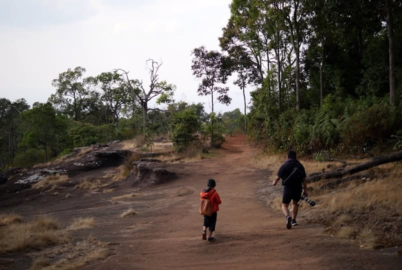
ความเศร้าของการตัดสินใจที่ย้อนกลับไปก็ยังเลือกเหมือนเดิม
บางการตัดสินใจทำดีที่สุดแล้วด้วยข้อมูลที่มี และแม้ผลจะไม่เป็นอย่างที่หวัง หากย้อนกลับไปอยู่ในสถานการณ์เดิมก็ยังเลือกเช่นเดิม ความรู้สึกที่เหลือจึงเป็นความเศร้าต่อผลลัพธ์ มากกว่าความเสียใจที่ได้ตัดสินใจลงไป

AI-Integrated Materials Engineering: เมื่อ AI เป็นเครื่องมือพื้นฐานของวิศวกรวัสดุ
การพูดคุยกับนิสิตวิศวกรรมวัสดุปี 1 ในโครงการ AIEP ชวนออกแบบการเรียนให้ AI เชื่อมกับการแก้ปัญหาในสาขา ตั้งแต่โครงสร้างจุลภาคและสมบัติวัสดุ ไปจนถึงกระบวนการผลิตและการค้นพบวัสดุใหม่

AI for Research: ใช้ AI ทำวิจัย โดยที่คนยังเป็นคนคิด
Workshop สำหรับนิสิต Food Science ปี 3 ใช้เคสนมถั่วเหลืองอายุเก็บสั้นลง ฝึกคิดเองก่อนใช้ AI ตรวจคำตอบด้วยความรู้ในสาขา และเรียนรู้จากข้อมูลทั้งห้อง พร้อมข้อจำกัดของผลสังเกตจากกิจกรรม
นักกีฬาจะทุ่มชีวิตให้กีฬาได้อย่างไร ถ้าระบบยังไม่มีอนาคตให้เขา
ผลการแข่งขันชวนให้มองแรงจูงใจของนักกีฬาไปพร้อมกับเส้นทางอาชีพ รายได้ และชีวิตหลังเลิกเล่นกีฬา ก่อนตัดสินว่าพวกเขาทุ่มเทเพียงพอหรือไม่
ปรับเงินเดือนมหาวิทยาลัยอย่างไร ให้ดึงดูดคนเก่งและดูแลคนเดิมไปด้วยกัน
การปรับฐานเงินเดือนเพื่อแข่งขันกับตลาดแรงงานต้องพิจารณา salary compression ภาระงบประมาณระยะยาว และความเป็นธรรมในช่วงเปลี่ยนผ่าน พร้อมให้คุณค่ากับการลงมือแก้ปัญหาเชิงโครงสร้างและรับฟังผู้ได้รับผลกระทบ
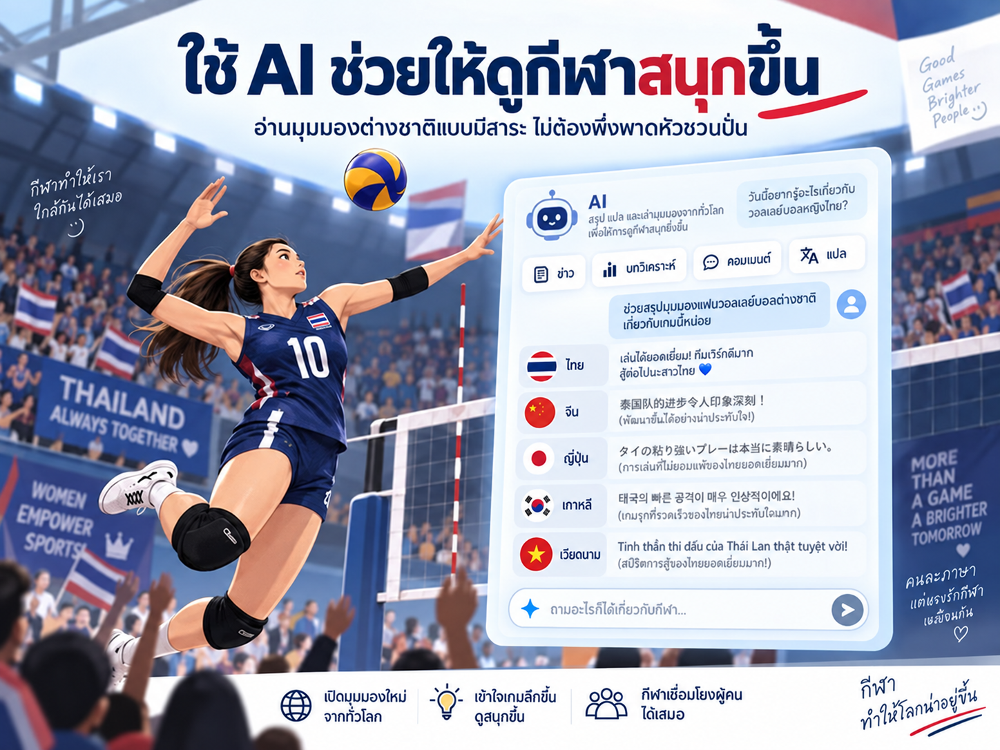
ใช้ AI ดูวอลเลย์บอลหญิงไทยให้สนุกขึ้น โดยไม่ต้องพึ่งพาดหัวชวนปั่น
แนวทางและ prompt สำหรับใช้ AI สำรวจข่าว บทวิเคราะห์ และมุมมองแฟนวอลเลย์บอลต่างประเทศอย่างมีบริบท แยกข้อเท็จจริงจากความเห็น และไม่ขยายเสียงสุดโต่งให้เป็นเสียงของคนทั้งประเทศ
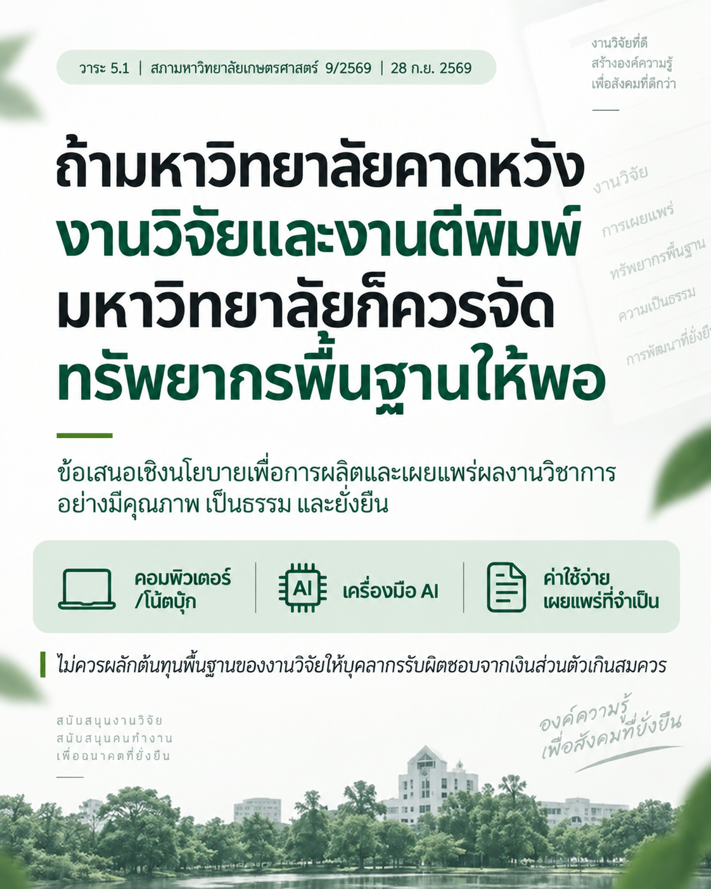
เมื่อมหาวิทยาลัยคาดหวังงานวิจัย มหาวิทยาลัยก็ควรจัดทรัพยากรพื้นฐานให้เพียงพอ
ข้อเสนอเชิงนโยบายให้มหาวิทยาลัยจัดระบบสนับสนุนทรัพยากรพื้นฐานสำหรับการวิจัยและเผยแพร่ผลงานอย่างมีคุณภาพ เป็นธรรม และยั่งยืน โดยเริ่มจากข้อมูลจริง ทางเลือกเชิงนโยบาย และโครงการนำร่องหนึ่งปี
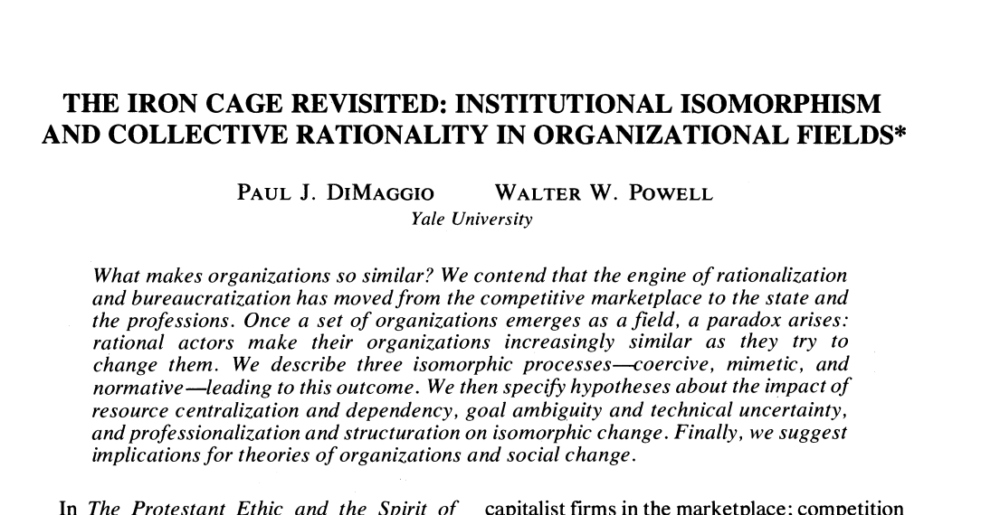
ทำไมองค์กรจึงค่อย ๆ เหมือนกัน แม้ทุกแห่งกำลังพยายามเปลี่ยนแปลง
บทความอธิบาย institutional isomorphism ผ่านแรงบังคับ การเลียนแบบ และบรรทัดฐานทางวิชาชีพ พร้อมตั้งคำถามว่าองค์กรเลือกสิ่งที่เหมาะสมจริงหรือเพียงสิ่งที่ปลอดภัยที่สุด
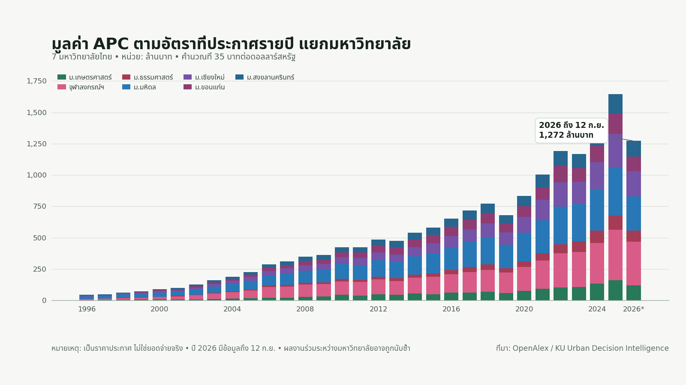
ค่าตีพิมพ์งานวิจัยของมหาวิทยาลัยไทย ใครเป็นคนจ่าย
ข้อมูลราคาประกาศ APC ของมหาวิทยาลัยไทย 7 แห่งชวนตั้งคำถามว่า ค่าใช้จ่ายจริงเกิดขึ้นเท่าไร ใครเป็นผู้รับภาระ และแรงจูงใจของระบบการตีพิมพ์กำลังกำหนดทิศทางการสร้างความรู้อย่างไร
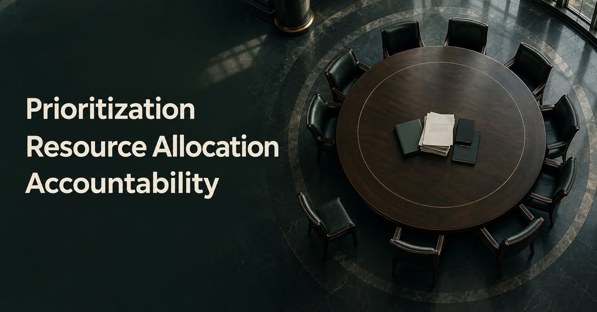
ลำดับความสำคัญ ทรัพยากร และความรับผิดชอบต่อศรัทธาในองค์กร
ทุกการจัดลำดับความสำคัญคือการเลือก ทุกการจัดสรรทรัพยากรสะท้อนว่าองค์กรให้คุณค่ากับอะไร และผู้ตัดสินใจต้องรับผิดชอบต่อความเสื่อมศรัทธาที่การตัดสินใจของตนสร้างขึ้น
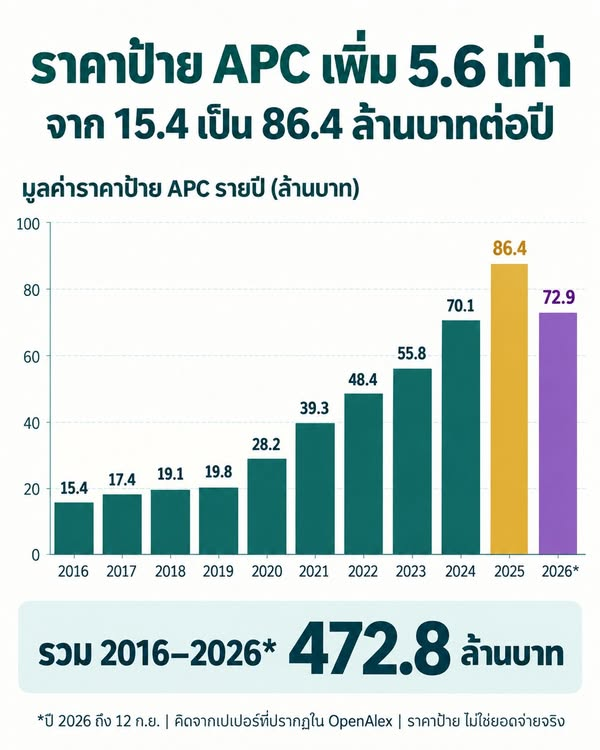
ราคาป้าย APC ของงาน Open Access มก. เพิ่ม 5.6 เท่า แต่ไม่ได้แปลว่าราคาต่อบทความเพิ่มเท่ากัน
มูลค่ารวมราคาป้าย APC ของผลงาน Open Access ที่มีผู้แต่งสังกัด มก. เพิ่มจาก 15.4 ล้านบาทในปี 2016 เป็น 86.4 ล้านบาทในปี 2025 แต่ส่วนสำคัญมาจากจำนวนผลงานที่เพิ่มขึ้น และตัวเลขนี้ไม่ใช่ยอดจ่ายจริง
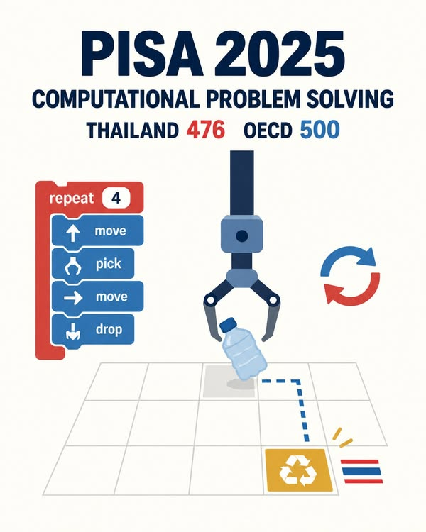
PISA 2025: จุดแข็งที่น่าต่อยอดของเด็กไทยด้าน Computational Problem Solving
ไทยได้ 476 คะแนนด้าน Computational Problem Solving ต่ำกว่าค่าเฉลี่ย OECD 24 คะแนน ชวนสำรวจศักยภาพด้านการคิดเป็นขั้นตอน การทดลอง และการแก้ปัญหา พร้อมโจทย์สำคัญว่าจะต่อยอดโดยไม่ละเลยทักษะพื้นฐานได้อย่างไร
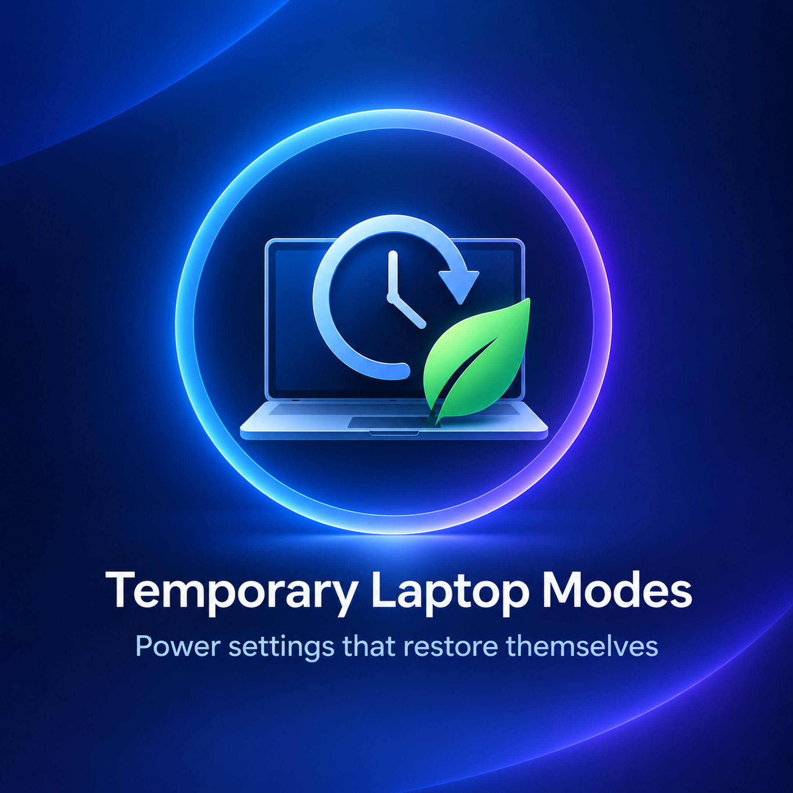
Temporary Laptop Modes: เลือกโหมดให้เหมาะกับงาน แล้วคืนค่าพลังงานให้อัตโนมัติ
แอป Windows ที่ให้เลือกโหมดพลังงานชั่วคราวจาก System Tray ตามงานตรงหน้า ทั้ง Focus, Coding, Presentation, Battery, Quiet และ Compile Boost พร้อมคืนค่าเดิมให้อัตโนมัติ
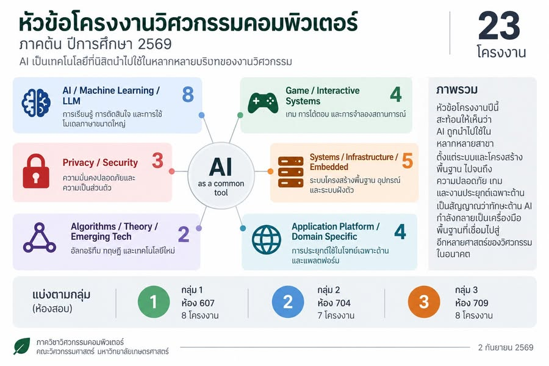
เมื่อ AI กลายเป็นทักษะร่วม วิศวกรยังต้องลึกในศาสตร์ของตัวเอง
จากหัวข้อโครงงานวิศวกรรมคอมพิวเตอร์ 23 โครงงาน AI กำลังกลายเป็นเครื่องมือร่วมกับเกม ระบบ โครงสร้างพื้นฐาน ความปลอดภัย และงานเฉพาะทาง ชวนคิดต่อถึงการศึกษาแบบ AI-Integrated Engineering
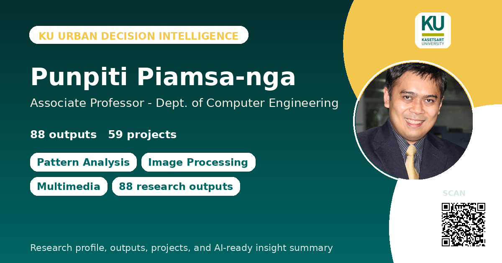
อินเทอร์เน็ตรู้จักเราแค่ไหน เมื่อข้อมูลสาธารณะกลายเป็นโปรไฟล์นักวิจัย
ทดลองรวมข้อมูลสาธารณะของบุคลากร มก. ให้เป็นหน้า Research Profile ที่แสดงผลงาน โครงการ ความเชี่ยวชาญ และ AI-ready insight พร้อมภาพสำหรับแชร์บน Facebook
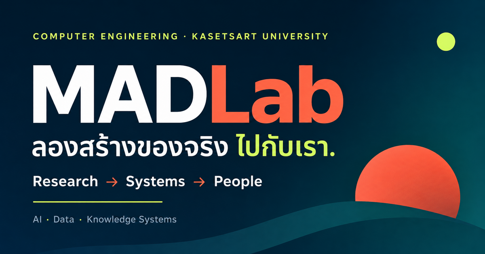
เมื่อจำเป็นต้องทำเว็บแล็บใหม่: MADLab จากงานวิจัย สู่ระบบและผู้คน
เว็บไซต์ใหม่ของ MADLab ที่อธิบายตัวตนของห้องปฏิบัติการผ่าน AI, data, knowledge systems และงานวิจัยที่ตรวจสอบได้ ภายใต้แนวคิด Research → Systems → People
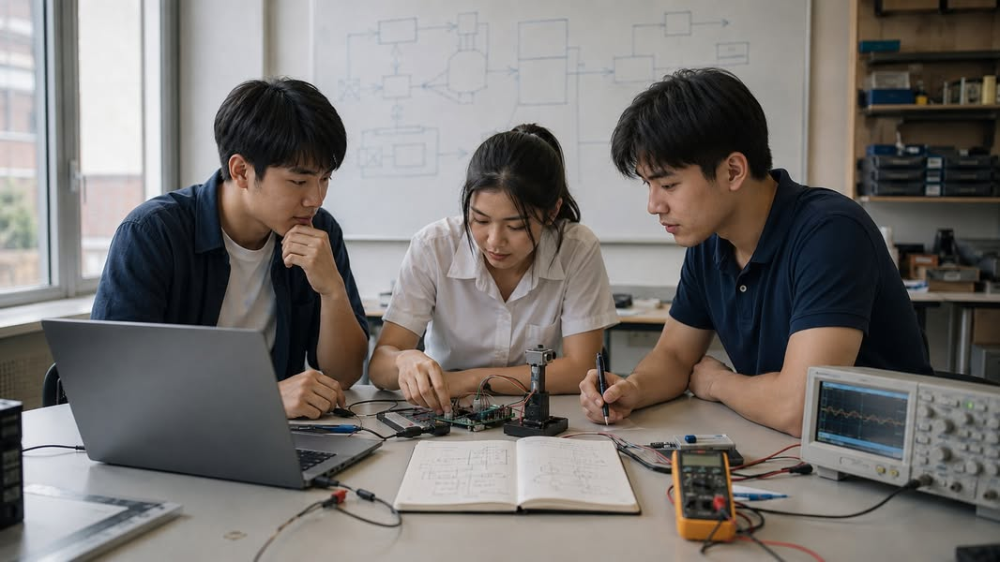
บัณฑิตวิศวกรรมคอมพิวเตอร์ที่ผมอยากเห็น: วิศวกรที่มีแกนและเรียนรู้ต่อได้
บัณฑิตไม่จำเป็นต้องรู้ทุกเทคโนโลยี แต่ควรคิดให้ชัด มองเห็นระบบ สร้างอย่างรับผิดชอบ ทำงานร่วมกับผู้อื่น พิสูจน์สิ่งที่สร้าง และเรียนรู้ต่อได้เมื่อเผชิญสิ่งที่ยังไม่รู้
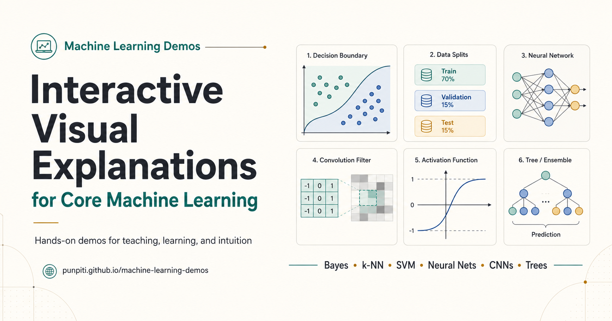
Machine Learning Demos: เมื่อแนวคิดนามธรรมกลายเป็นสิ่งที่ทดลองได้
ชุด interactive visual explanations สำหรับสอนและเรียนรู้ Machine Learning ที่เปิดให้เห็นกลไก ทดลองเปลี่ยนเงื่อนไข และสร้าง intuition ก่อนเชื่อมเข้าสู่สมการและทฤษฎี
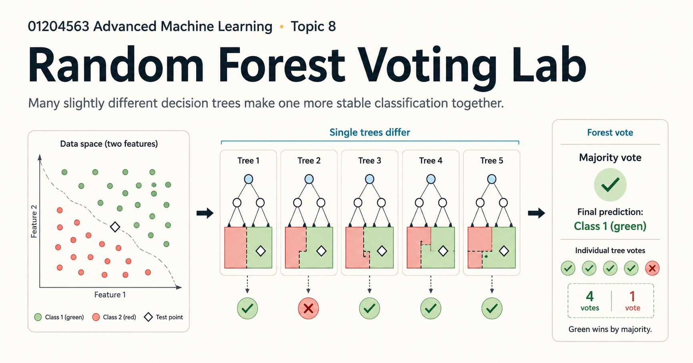
Random Forest Voting Lab: เมื่อต้นไม้หลายต้นช่วยกันตัดสินใจ
Interactive demo ที่เปิดกลไก Random Forest ตั้งแต่ Gini impurity, bootstrap samples และ random feature selection ไปจนถึง majority vote พร้อมเปรียบเทียบ Single Tree, Bagging และ Random Forest
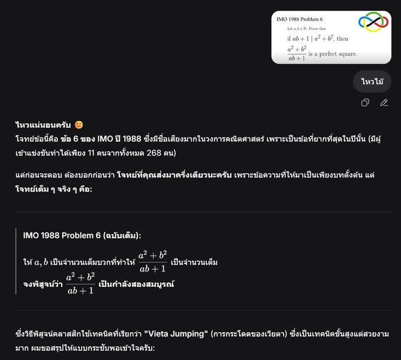
ก่อนสร้าง AI เพื่อการศึกษา ต้องรู้ก่อนว่า AI ฟรีทำอะไรได้แล้ว
ก่อนพัฒนา AI เฉพาะทางเพื่อการเรียนรู้ ควรสำรวจฐานความสามารถของ AI ที่ผู้เรียนเข้าถึงได้ฟรี และแยกคำถามว่า AI ตอบได้ ออกจากคำถามว่าผู้เรียนเรียนรู้ดีขึ้นจริงหรือไม่
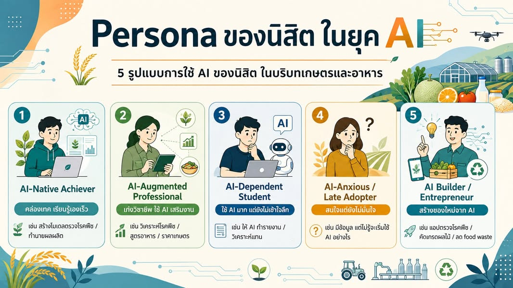
อย่าเริ่มแผนแม่บทด้วยคำว่า “ใช้ AI” ให้เริ่มจากคนที่เราอยากสร้าง
แผนแม่บท AI ควรเริ่มจากภาพอนาคตและคนที่องค์กรต้องการสร้าง ไม่ใช่เริ่มจากรายการเทคโนโลยี พร้อม Persona นิสิตหกแบบสำหรับออกแบบมหาวิทยาลัยในยุค AI
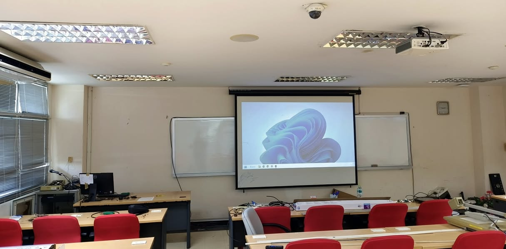
ห้องเรียนกำลังจะเปลี่ยน แล้ววิธีเรียนของเราล่ะ
เมื่อ AI ทำให้ความรู้และเครื่องมือเข้าถึงง่ายขึ้น มหาวิทยาลัยต้องเปลี่ยนจากการถ่ายทอดเนื้อหาไปสู่การสร้างวิธีคิด การเรียนรู้ด้วยตนเอง โจทย์จริง และการประเมินความสามารถในโลกจริง
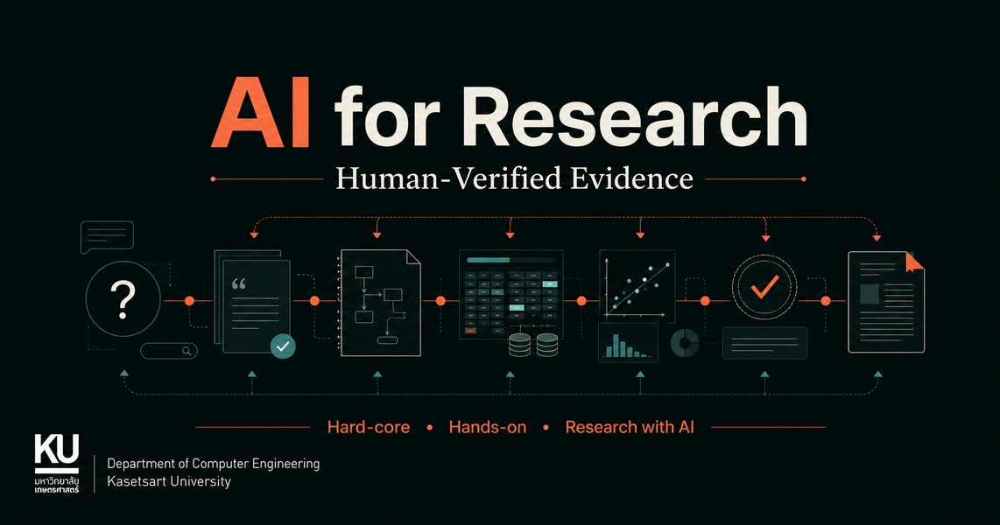
AI for Research: AI เสนอ มนุษย์ตรวจสอบ
แนวคิดสามวิชา AI for Research ครอบคลุมการพัฒนาโจทย์ การตรวจงาน และการเผยแพร่ โดยยึดหลัก Human-Verified Evidence: AI ช่วยเสนอ แต่หลักฐานและการตัดสินใจทางวิชาการเป็นความรับผิดชอบของมนุษย์
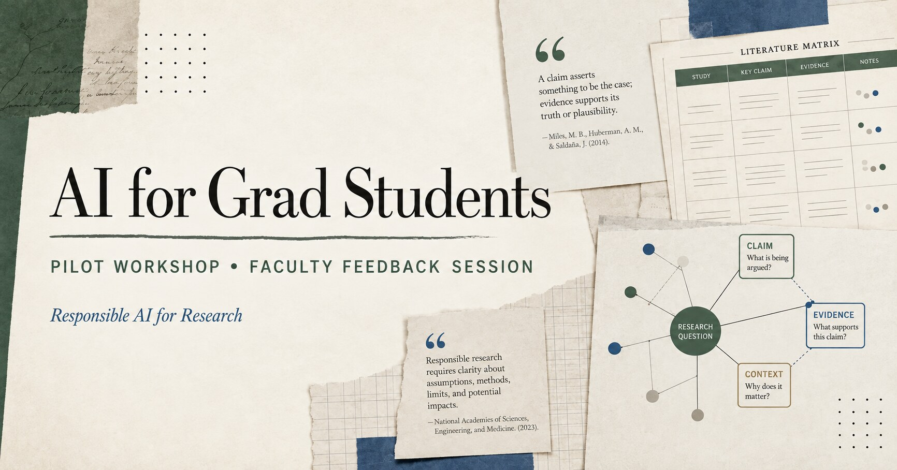
AI for Grad Students: ทดลองคลาสก่อนสอนนิสิตจริง
แนวคิด pilot workshop หนึ่งวันสำหรับให้อาจารย์หลายสาขาทดลองเรียนในบทบาทนิสิตบัณฑิตศึกษา และช่วยตรวจเนื้อหา workflow ตลอดจนความเสี่ยงด้าน citation, privacy, ethics และ research integrity
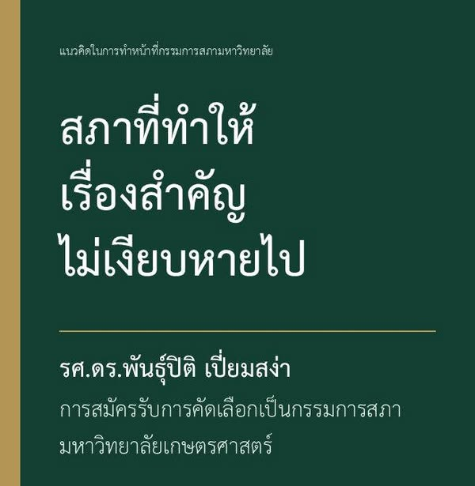
สภาที่ทำให้เรื่องสำคัญไม่เงียบหายไป
วิสัยทัศน์ต่อบทบาทกรรมการสภามหาวิทยาลัย: ตั้งคำถามด้วยข้อมูลและหลักการ ทำให้เสียงที่แตกต่างมีพื้นที่ และติดตามเรื่องสำคัญจนการรับทราบไม่กลายเป็นจุดจบของความรับผิดชอบ
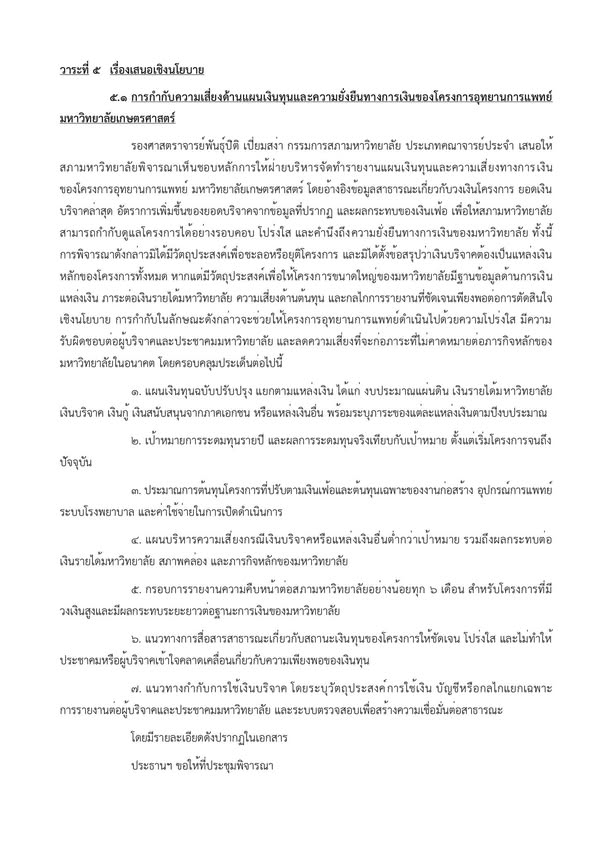
โครงการโรงพยาบาลต้องมีแผนเงินทุนที่โปร่งใสและตรวจสอบได้
ข้อเสนอให้สภามหาวิทยาลัยกำกับความเสี่ยงด้านแผนเงินทุนของโครงการอุทยานการแพทย์ โดยให้มีข้อมูลแหล่งเงิน ภาระต่อมหาวิทยาลัย ความเสี่ยงด้านต้นทุน และการรายงานความคืบหน้าอย่างเป็นระบบ
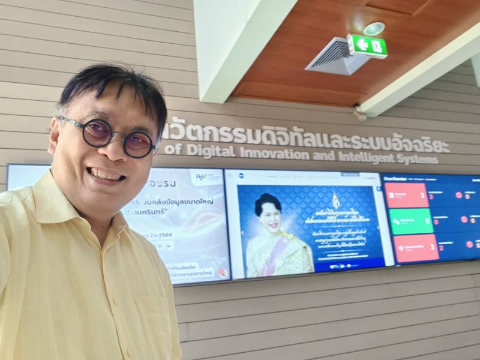
Data Lake ไม่ใช่โกดังข้อมูล แต่คือระบบความไว้วางใจของมหาวิทยาลัย
การพัฒนา Data Lake ควรเริ่มจากโจทย์การตัดสินใจและข้อมูลที่ตรวจสอบย้อนกลับได้ เชื่อม Data Product, API, Dashboard, Data Governance และ Data Quality เข้ากับกระบวนการทำงานจริง
หนึ่งคะแนนให้คนที่พร้อมตั้งคำถาม และพร้อมติดตามคำตอบ
หลักคิดในการสมัครเป็นกรรมการสภามหาวิทยาลัยจากคณาจารย์ประจำ: ทำหน้าที่อย่างอิสระ ตั้งคำถาม เสนอทางเลือก ติดตามให้เกิดผล และสะท้อนเสียงของผู้ปฏิบัติงานจริง
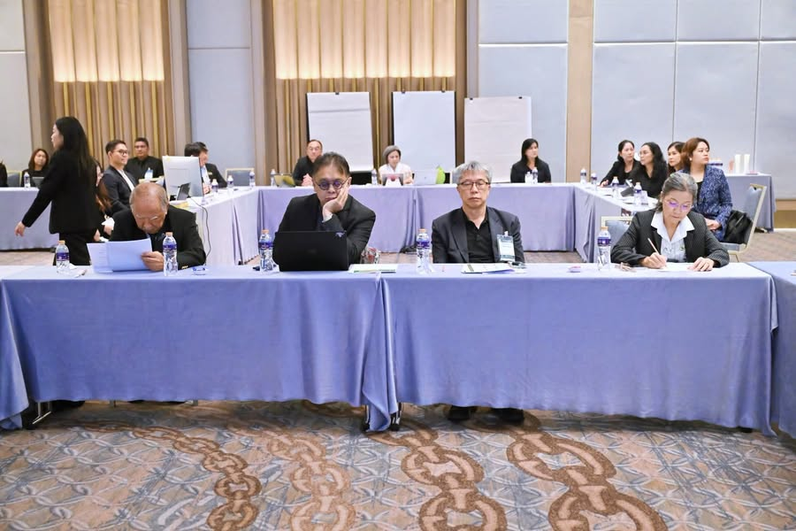
มองมหาวิทยาลัยอีก 20 ปี ต้องคิดให้พ้นจากมหาวิทยาลัยวันนี้
บทเรียนจาก KU Strategic Foresight: มหาวิทยาลัยต้องคิดไกลกว่าตลาดแรงงานปัจจุบัน เศรษฐศาสตร์ของ reskill/upskill โครงสร้างหลักสูตรเดิม และความเข้าใจ AI แบบเครื่องมือ
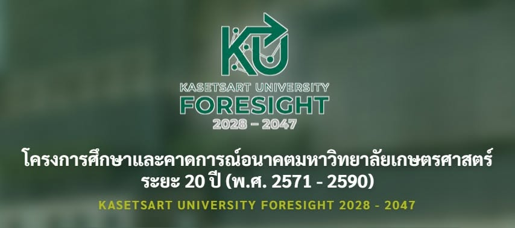
คู่มืออ่านชุดเอกสาร KU Foresight 2028–2047
รวบรวมและจัดหมวดเอกสารโครงการศึกษาและคาดการณ์อนาคตมหาวิทยาลัยเกษตรศาสตร์ ระยะ 20 ปี ทั้งบริบทโลก เทคโนโลยี การศึกษา AI เกษตร อาหาร กฎหมาย แผน และข้อมูลพื้นฐานมหาวิทยาลัย
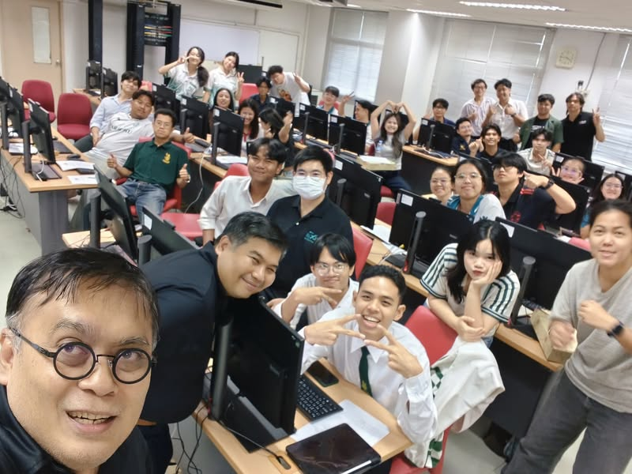
เมื่อห้องเรียนรัฐศาสตร์ทดลองประชาธิปไตยด้วย Decidim
บทเรียนจากการให้นิสิตรัฐศาสตร์ทดลองใช้ Decidim เพื่อสร้างข้อเสนอ รับฟังความคิดเห็น ปรับข้อเสนอ และโหวตงบประมาณจำลอง โดยเชื่อมการออกแบบกระบวนการเข้ากับความน่าเชื่อถือของระบบ
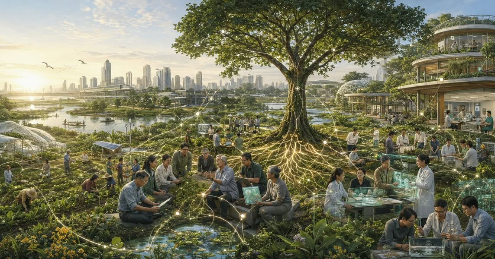
The Life Systems University: เหตุผลที่ มก. ยังควรดำรงอยู่ในปี 2589
วิสัยทัศน์มหาวิทยาลัยเกษตรศาสตร์ในอีก 20 ปี ในฐานะโครงสร้างพื้นฐานทางความรู้และความร่วมมือที่รวมคน ข้อมูล เทคโนโลยี พื้นที่ทดลอง และความไว้วางใจ เพื่อดูแลระบบชีวิตของสังคม
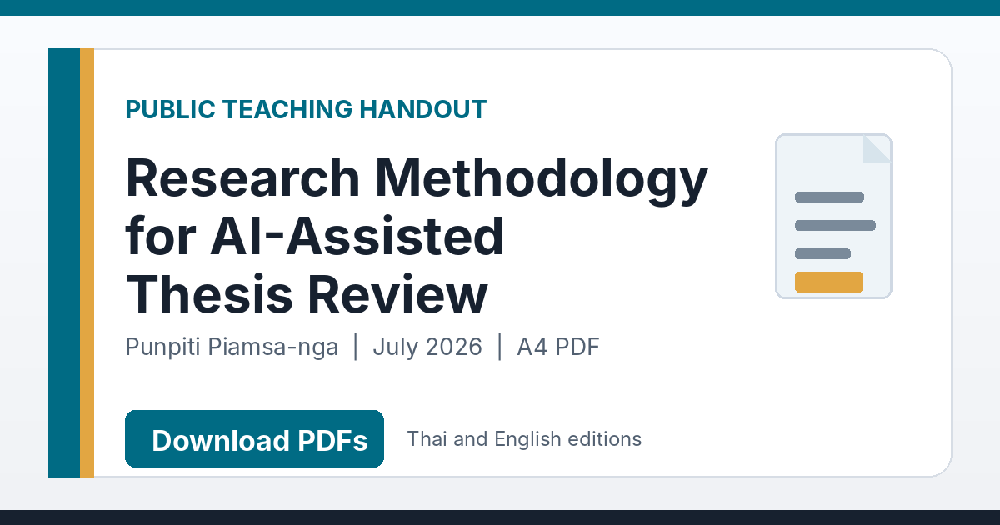
Research Methodology for AI-Assisted Thesis Review: เอกสารทบทวนตรรกะงานวิจัยก่อนใช้ AI
เอกสารประกอบการเรียน 26 หน้า ภาษาไทยและอังกฤษ สำหรับตรวจความเชื่อมโยงระหว่างปัญหา วิธี หลักฐาน และข้อสรุป พร้อมแนวทางใช้ AI ช่วยตั้งคำถามโดยมนุษย์ยังรับผิดชอบการตรวจสอบและตัดสินใจ
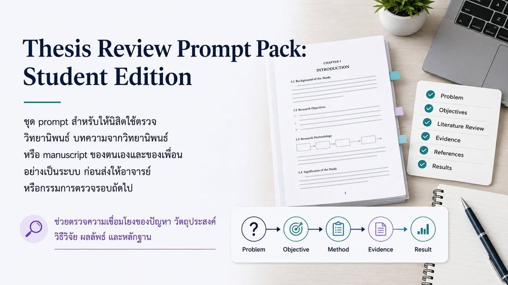
Thesis Review Prompt Pack: Student Edition — ให้ AI ช่วยตั้งคำถาม ไม่ใช่ตัดสินแทน
ชุด prompt สำหรับให้นิสิตตรวจความเชื่อมโยงของปัญหา วัตถุประสงค์ วิธี หลักฐาน ผลลัพธ์ claim reference และ limitation ก่อนส่ง draft โดยให้ AI ช่วยตั้งคำถามแบบ reviewer
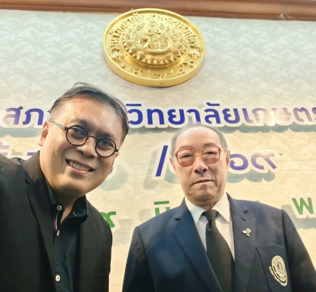
วาระสิ้นสุดลงได้ แต่คำถามบางคำถามยังควรถูกถามต่อไป
บันทึกส่งท้ายวาระกรรมการสภามหาวิทยาลัยจากคณาจารย์ประจำ พร้อมสรุป 13 วาระเชิงนโยบายใน 5 ด้าน ได้แก่ ทรัพยากร ฐานวิชาการ อนาคตการศึกษา ระบบข้อมูล และธรรมาภิบาล
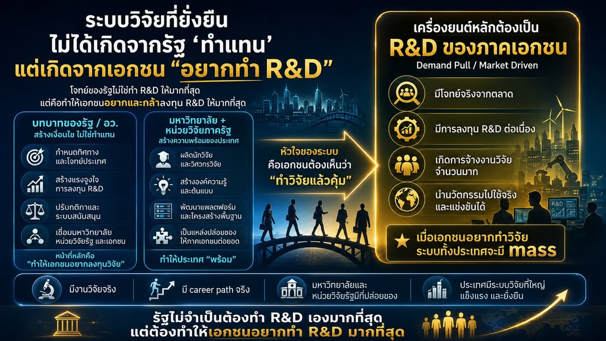
ระบบวิจัยยั่งยืนเกิดเมื่อเอกชนอยากทำ R&D และนักวิจัยมี career path จริง
เทคโนโลยีเป้าหมายต้องมาคู่กับ research career ladder นอกมหาวิทยาลัย ระบบทุนที่สร้างกำลังคนระยะยาว และแรงจูงใจให้ภาคเอกชนมอง R&D เป็นการลงทุนทางธุรกิจที่คุ้มค่า
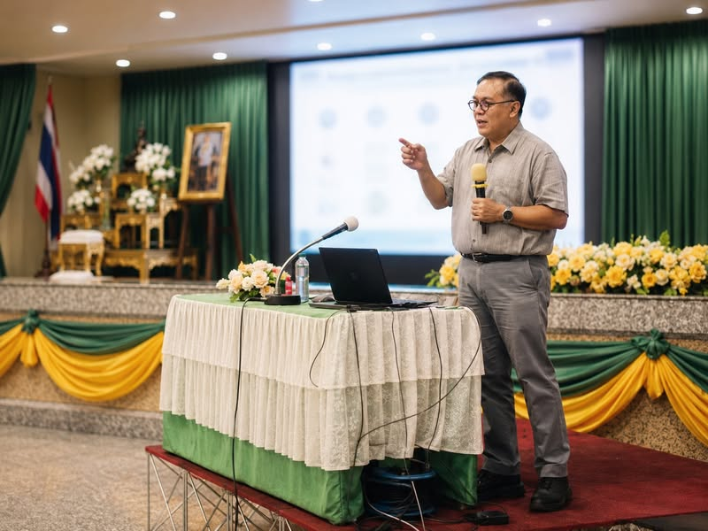
พอร์ตไม่ใช่ที่เก็บอดีต แต่เป็นหลักฐานว่าเราพร้อมเดินต่อทางไหน
แนวคิดสำหรับทำ TCAS Portfolio ให้ตอบสามคำถามสำคัญ: สนใจสาขานี้จริงหรือไม่ เคยลงมือทำอะไร และหลักฐานนั้นแสดงศักยภาพที่จะเติบโตต่อในเส้นทางนี้อย่างไร
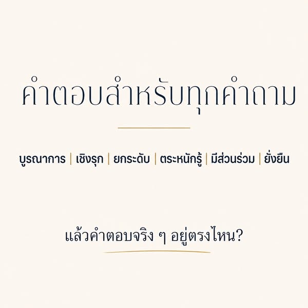
ถ้าคำตอบหนึ่งใช้ได้กับทุกปัญหา มันอาจไม่ได้ตอบปัญหาไหนเลย
คำอย่างบูรณาการ เชิงรุก ยกระดับ ตระหนักรู้ มีส่วนร่วม ธรรมาภิบาล และยั่งยืนไม่ผิด แต่จะเป็นเพียงภาษาสวย หากไม่ระบุปัญหา กลไก ผู้รับผิดชอบ ทรัพยากร และหลักฐานความสำเร็จ
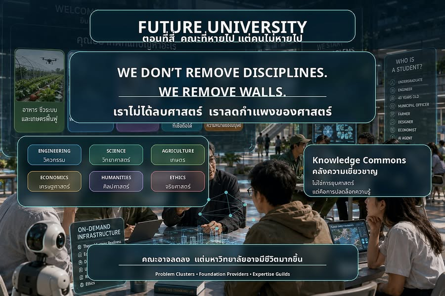
Future University: เราไม่ได้ลบศาสตร์ เราลดกำแพงของศาสตร์
มหาวิทยาลัยอนาคตไม่จำเป็นต้องทำให้ศาสตร์หายไป แต่ต้องเปลี่ยนคณะจากอาณาเขตปิดเป็นคลังความลึกทางวิชาการ และจัดการเรียนรู้รอบปัญหาจริงที่ต้องใช้หลายศาสตร์ร่วมกัน
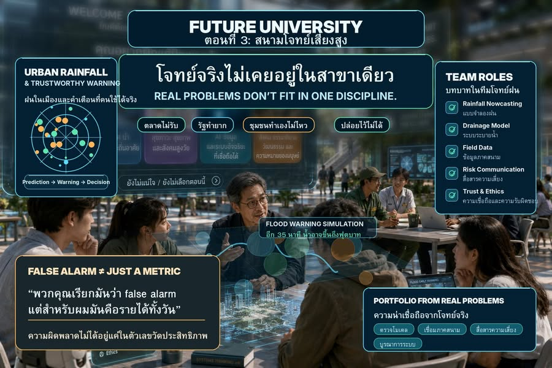
Future University: สนามโจทย์เสี่ยงสูง
มหาวิทยาลัยควรเป็นพื้นที่ฝึกแก้ปัญหาสำคัญที่ตลาดไม่รับ รัฐทำได้ยาก และชุมชนทำเองไม่ไหว ผ่านโจทย์จริง ความเสี่ยงจริง ความผิดพลาดจริง และผลกระทบจริงต่อผู้คน
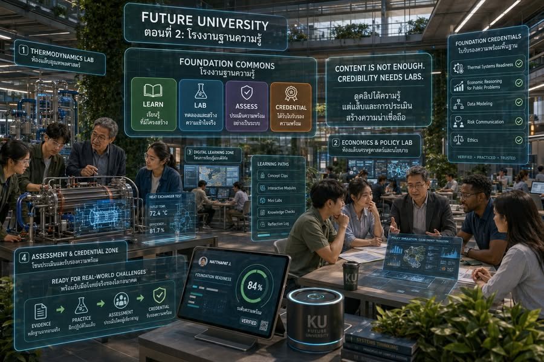
Future University: Foundation Commons โรงงานฐานความรู้
มหาวิทยาลัยหลังยุครายวิชาไม่ได้ลดความสำคัญของความรู้พื้นฐาน แต่สร้างระบบที่รับผิดชอบการเรียน แล็บ การประเมิน การรับรอง และหลักฐานความพร้อมสำหรับโจทย์จริง
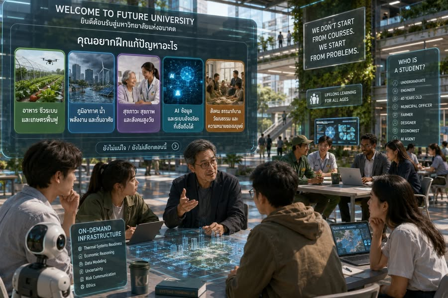
Future University: วันที่วิชาหายไป
ภาพมหาวิทยาลัยปี 2047 ที่ไม่ได้เริ่มจากตารางรายวิชา แต่เริ่มจากคำถามว่าผู้เรียนอยากฝึกแก้ปัญหาอะไร แล้วเรียกใช้ความรู้พื้นฐานเป็น on-demand infrastructure
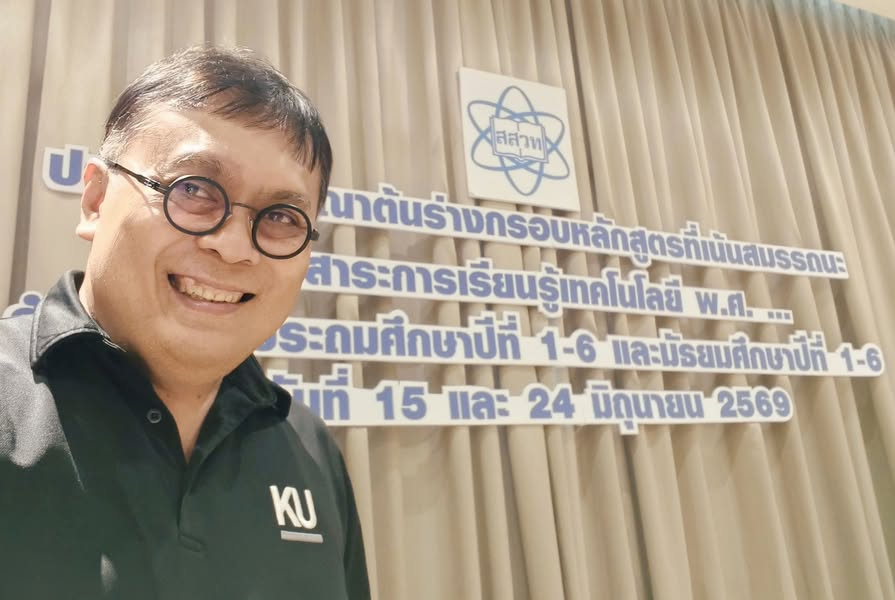
หลักสูตรเทคโนโลยีก็เหมือนผัดไทย
หลักสูตรที่ดีไม่ได้วัดเพียงว่ามีองค์ประกอบครบ แต่ต้องเหมาะกับผู้เรียนและบริบท พร้อมสร้างความสามารถให้เด็กคิด ประเมิน เลือก ทำ และใช้เทคโนโลยีสร้างอนาคตของตนเอง
Day 16: กลับบ้าน หลังการเดินทางเปลี่ยนเราไปแล้ว
บทส่งท้ายการเดินทาง 16 วัน จาก Thessaloniki ถึง Milan ว่าด้วยการกลับสู่ชีวิตประจำวัน การใช้ AI ช่วยตัดสินใจ และการเลือกสิ่งที่ดีที่สุดเท่าที่ทำได้ในเวลานั้น
AI ลบคนออกจากภาพได้ แต่ลบความจริงไม่ได้
ภาพอาจถูกแก้ไขและคนอาจถูกลบออกด้วย AI แต่การแก้ภาพไม่สามารถลบเหตุการณ์ ความทรงจำ หรือหน้าที่ของเราที่ต้องยืนข้างความถูกต้อง
TOI-Zero: ชัยชนะก้าวแรกอยู่ที่ตัวคุณเอง
มากกว่าล้านครั้งของการส่งโปรแกรมจากนักเรียนเป็นหมื่นคน และผู้ผ่านเกณฑ์มากกว่า 6,000 คน ยืนยันว่าทักษะเกิดจากการลงมือทำ วางแผน ฝึก และชนะตัวเอง
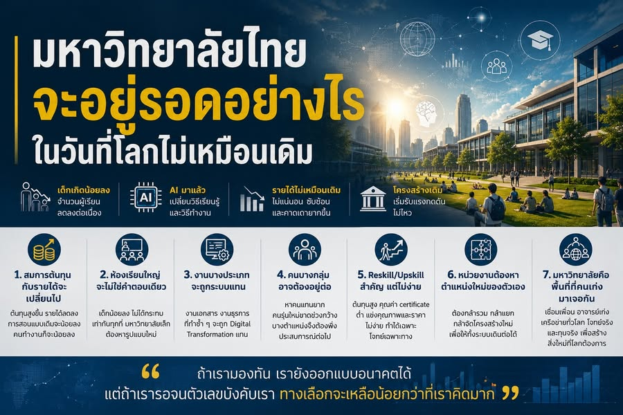
มหาวิทยาลัยไทยจะอยู่รอดอย่างไร ในวันที่โลกไม่เหมือนเดิม
เจ็ดแรงเปลี่ยนแปลงที่มหาวิทยาลัยไทยต้องเผชิญ ตั้งแต่สมการต้นทุน เด็กเกิดน้อย ระบบงาน กำลังคน reskill โครงสร้างหน่วยงาน ไปจนถึงความหมายใหม่ของมหาวิทยาลัย
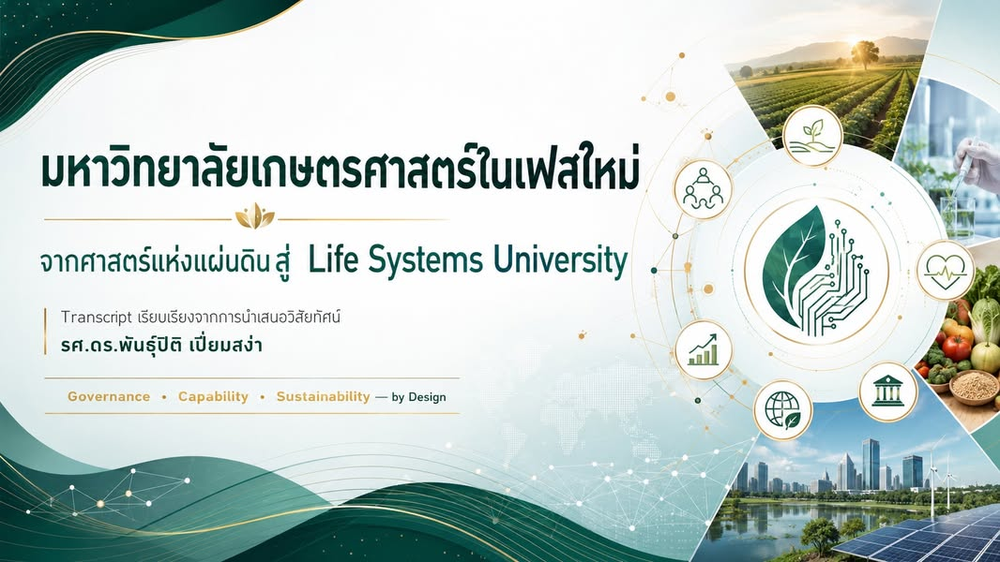
มหาวิทยาลัยเกษตรศาสตร์ในเฟสใหม่: จากศาสตร์แห่งแผ่นดินสู่ Life Systems University
นำจุดแข็งของมหาวิทยาลัยเกษตรศาสตร์มาเชื่อมเป็นระบบ เพื่อสร้างผลลัพธ์ที่สังคมเห็นและเชื่อถือได้ ผ่านธรรมาภิบาล ศักยภาพ และความยั่งยืน
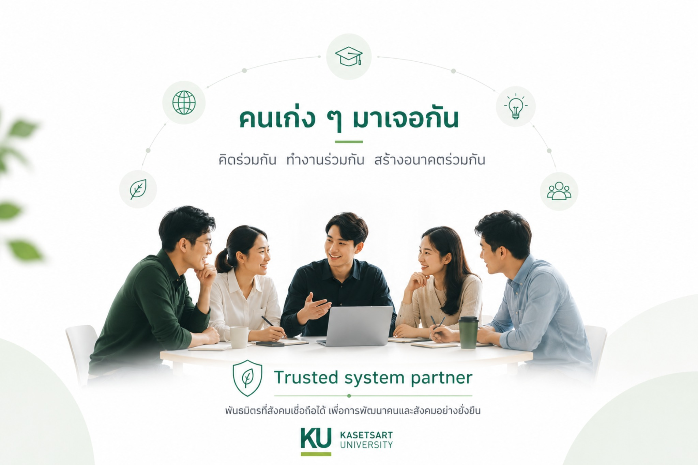
มหาวิทยาลัยยังจำเป็นไหม ในวันที่ AI ทำข้อสอบแทนคนได้
บทความตั้งคำถามว่ามหาวิทยาลัยยังจำเป็นไหมในวันที่ AI ทำข้อสอบได้และคอร์สออนไลน์เข้าถึงง่าย โดยเสนอว่าคุณค่าของมหาวิทยาลัยอยู่ที่การเป็นพื้นที่พบกันทางปัญญา การสร้างคน งานเสี่ยงระยะยาว และ trusted system partner ของสังคม
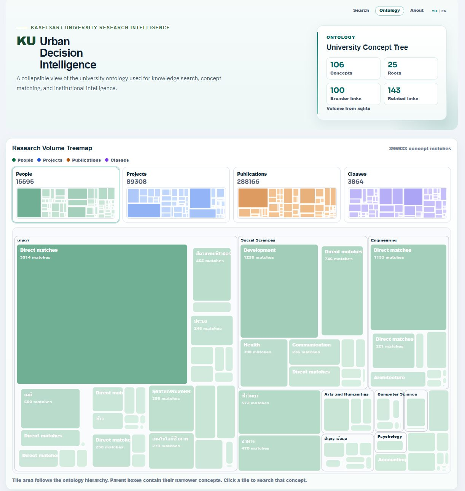
Ontology Treemap คือก้าวต่อของ University Knowledge Graph และ Research Intelligence
บทความว่าด้วย Ontology Treemap ของ KU Urban Decision Intelligence ในฐานะ infrastructure ที่ช่วยให้มหาวิทยาลัยเห็นความเชี่ยวชาญ งานวิจัย โครงการ สิ่งพิมพ์ บุคลากร และองค์ความรู้เป็นระบบความสัมพันธ์ ไม่ใช่เพียงรายชื่อข้อมูลกระจัดกระจาย
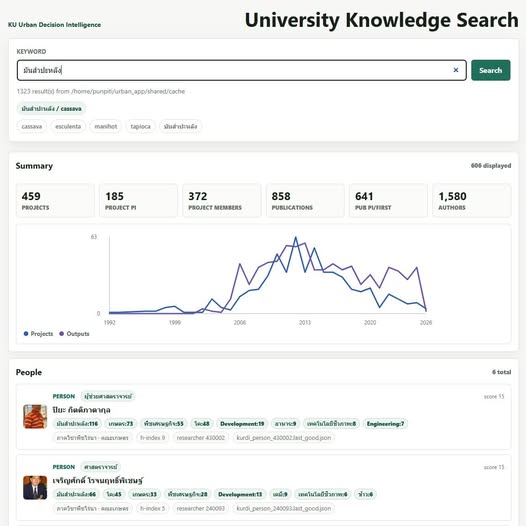
AI ลดต้นทุนการทดลอง จนมหาวิทยาลัยต้องเปลี่ยนวิธีคิดเรื่องการทำงาน
บทความว่าด้วยการใช้ AI ทำ prototype ระบบค้นองค์ความรู้ของมหาวิทยาลัยในเวลาประมาณ 6 ชั่วโมง และข้อเสนอว่ามหาวิทยาลัยต้องเข้าใจต้นทุนใหม่ของการทดลองที่ถูกลงอย่างมาก เพื่อทดลองเร็ว เรียนรู้เร็ว และเปลี่ยนไอเดียให้เป็นระบบจริงได้เร็วขึ้น

Foundation Cores × Dynamic Frontiers คือวิธีเปลี่ยน KU จากสาขาไปสู่โจทย์โลก
บทความขยายแนวคิด Foundation Cores × Dynamic Frontiers ว่า KU ต้องไม่เพียงทำงานตามสาขาเดิม แต่ต้องเชื่อมความแข็งแรงเดิมกับโจทย์โลก เพื่อสร้าง capability ใหม่ ผลกระทบเชิงระบบ และบทบาท trusted partner ของประเทศ

Transcript การนำเสนอวิสัยทัศน์: Life Systems University
Transcript เรียบเรียงจากการนำเสนอวิสัยทัศน์ว่ามหาวิทยาลัยเกษตรศาสตร์ควรขยับสู่ Life Systems University ด้วยธรรมาภิบาล ระบบข้อมูล คน และความยั่งยืน
ถามตอบหลังการนำเสนอวิสัยทัศน์: Life Systems University
ช่วงถามตอบหลังการนำเสนอวิสัยทัศน์ Life Systems University ว่าด้วยความมั่นคงบุคลากร รายได้จากงานวิจัย การพัฒนาวิทยาเขต ธรรมาภิบาล ความเสี่ยง และ trusted system partner
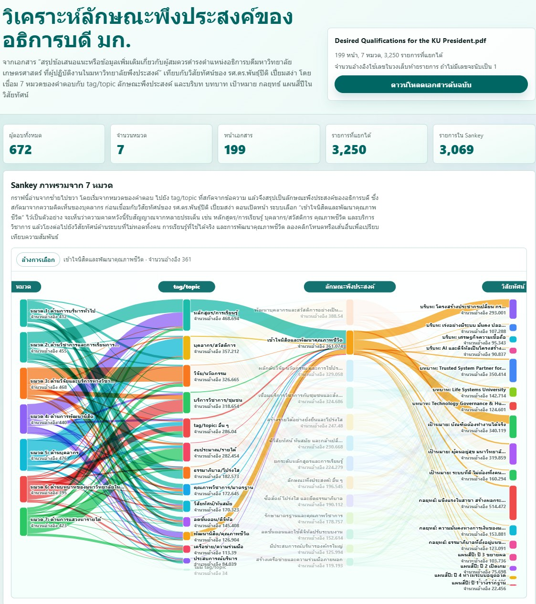
ทำให้เสียง 672 คนในมหาวิทยาลัยอ่านได้ เห็นภาพ และใช้ตัดสินใจได้จริง
บทความว่าด้วยการแปลงข้อเสนอแนะ 199 หน้า จากคนในมหาวิทยาลัย 672 คน ให้เป็นเว็บไซต์ที่อ่านภาพรวมได้ง่ายขึ้น เห็นทิศทางของเสียงในมหาวิทยาลัย และนำไปใช้ประกอบการตัดสินใจได้จริง
มหาวิทยาลัยไม่ได้ขาดไอเดีย แต่ขาดระบบที่ทำให้ไอเดียเกิดผลจริง
บทความว่าด้วยบทบาทผู้นำมหาวิทยาลัยในการสร้างระบบที่ทำให้ไอเดียเกิดผลจริง ทำให้องค์กรเดินไปในทิศเดียวกัน และทำให้ทรัพยากร ความสามารถ และศักยภาพที่มีอยู่สร้างผลกระทบต่อสังคมได้อย่างยั่งยืน
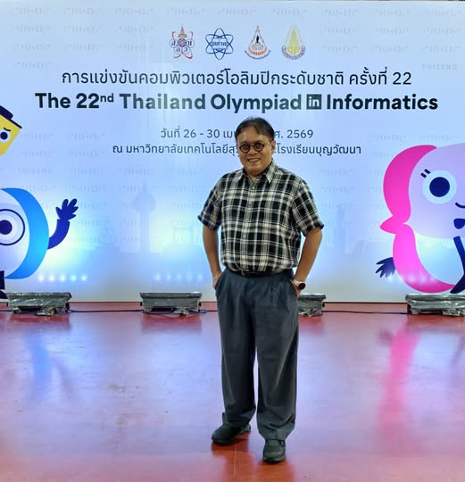
การสนับสนุน talent ไม่ได้สร้างแค่เหรียญ แต่สร้างเครือข่ายและคำถามที่ดี
บทความว่าด้วยเหตุผลของการสนับสนุน talent ผ่าน TOI22 และโอลิมปิกคอมพิวเตอร์ โดยชี้ว่าสิ่งที่ได้ไม่ใช่แค่เหรียญ แต่คือการรู้ศักยภาพประเทศ เครือข่ายคนและองค์กร ระบบนิเวศการเรียนรู้ และความสามารถในการตั้งคำถามที่ดีในยุค AI
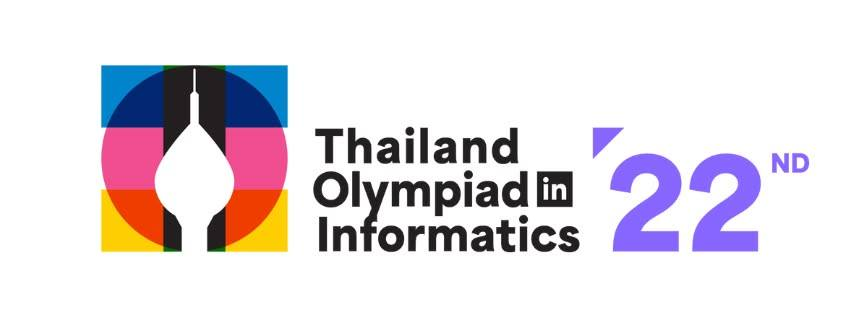
TOI ไม่ได้สร้างแค่ 4 ผู้แทน แต่สร้างฐานคนหลักหมื่นให้ประเทศ
บทความอธิบายคุณค่าของ TOI และ สอวน.คอมพิวเตอร์ว่าไม่ได้อยู่ที่เหรียญหรือผู้แทน 4 คนเท่านั้น แต่อยู่ที่ฐานคนหลักหมื่น ครู ระบบฝึก และ ecosystem ที่ช่วยสร้างทักษะด้านคอมพิวเตอร์ให้ประเทศในระยะยาว
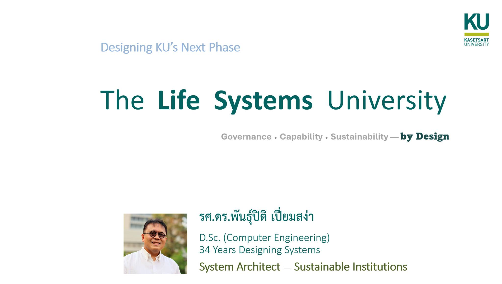
มหาวิทยาลัยที่ดีต้องรู้ว่าคนเก่งมาจากไหน และจะพาเขาไปไหนต่อ
บทความสรุปภาวะผู้นำที่มหาวิทยาลัยต้องการในช่วงเปลี่ยนผ่าน ผ่าน 4 มิติ คือ system, talent, global และ institution building โดยเน้นว่ามหาวิทยาลัยที่ดีต้องเห็นเส้นทางของคนตั้งแต่ก่อนเข้ามหาวิทยาลัยจนถึงอนาคตหลังจากนั้น
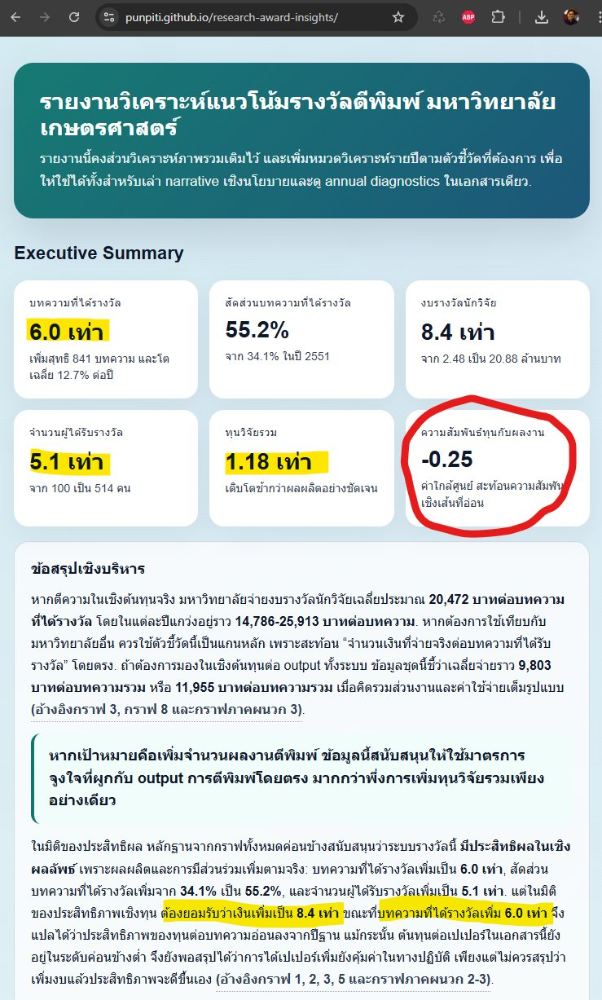
รางวัลตีพิมพ์สัมพันธ์กับจำนวนบทความ แต่ข้อมูลต้องถูกอ่านอย่างระวัง
บทความว่าด้วยการใช้ข้อมูลรางวัลตีพิมพ์ ทุนวิจัย และจำนวนบทความ เพื่ออ่านความสัมพันธ์เชิงนโยบายโดยไม่สับสนระหว่าง correlation กับ causation พร้อมชวนอ่านรายงานวิเคราะห์ฉบับเต็มใน Research Award Insights
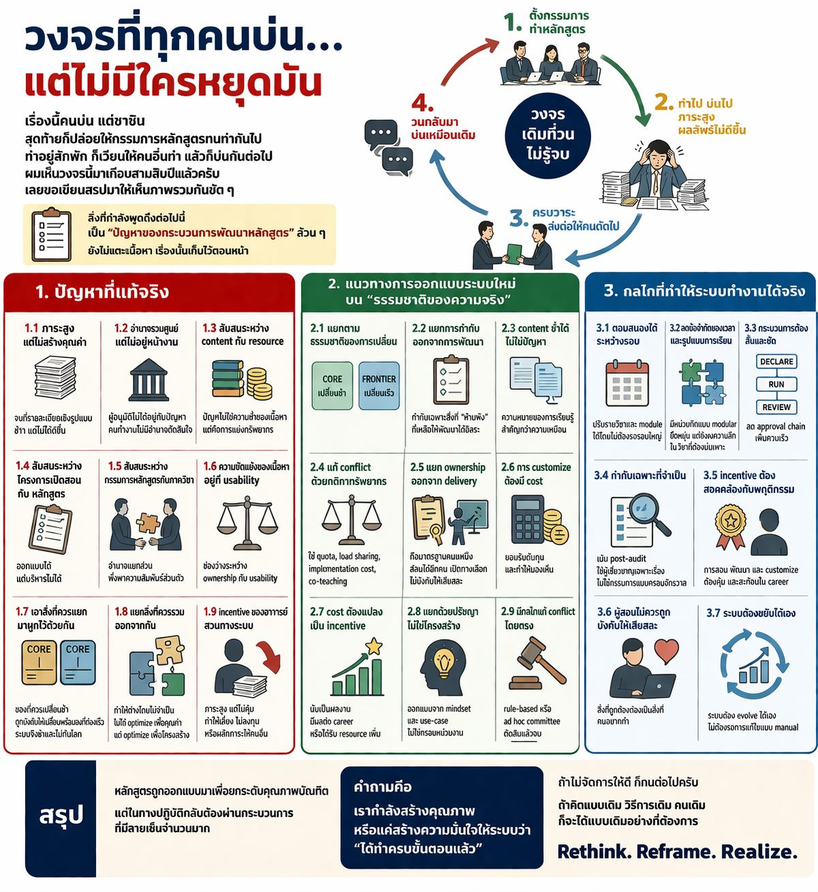
การปฏิรูปหลักสูตรต้องเริ่มจากการออกแบบระบบ ไม่ใช่เพิ่มขั้นตอน
บทความว่าด้วยปัญหาของกระบวนการพัฒนาหลักสูตรที่ภาระสูง อำนาจไม่สมดุล และใช้ approval chain แทนการออกแบบระบบ พร้อมข้อเสนอให้เปลี่ยนไปสู่แนวทาง Declare → Run → Review
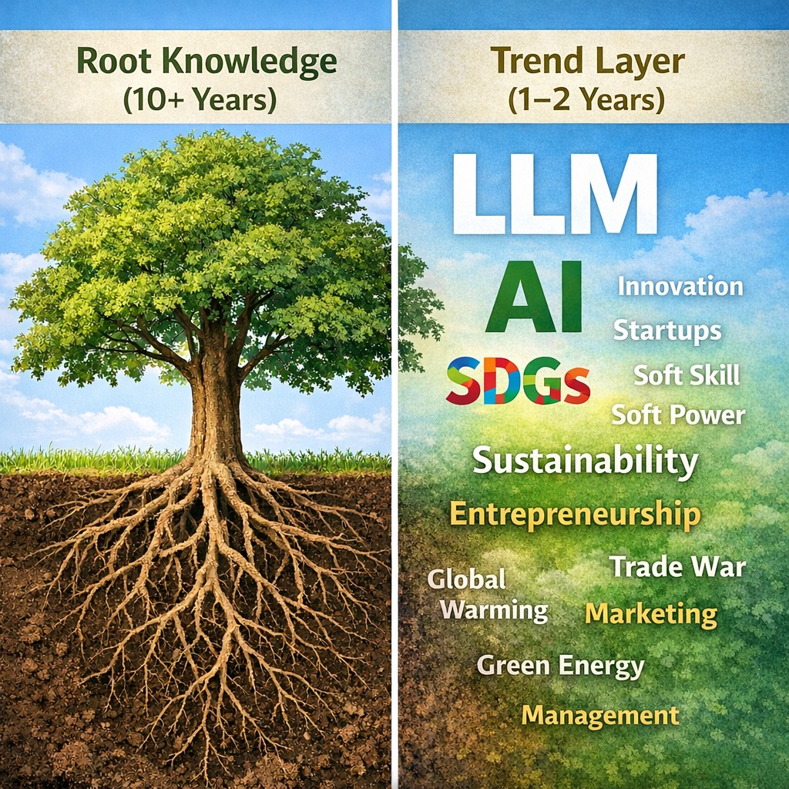
ในยุค LLM หลักสูตรต้องสอนการออกแบบระบบ ไม่ใช่แค่ทักษะที่ AI ทำแทนได้
ข้อเขียนว่าด้วยการออกแบบหลักสูตรในโลกที่ LLM เปลี่ยนความหมายของทักษะมีค่า จากการสอนเนื้อหาแยกส่วน ไปสู่การสร้างคนที่ออกแบบ ตัดสินใจ และคุมระบบได้จริง
KU Urban V4 มีคุณค่าเมื่อ data กลายเป็น narrative ที่เล่าเรื่องงานวิจัยได้จริง
ข้อเขียนว่าด้วยการยกระดับ KU Urban V4 จาก dashboard ดูข้อมูล ไปสู่เครื่องมือเล่าเรื่องงานวิจัยของตัวเอง โดยใช้ track record จริงเป็นฐานและลดโอกาส hallucination ของ AI
หลักสูตรที่ดีต้องตอบทั้งผู้เรียนและสังคม ไม่ใช่แค่วิชาที่ผู้สอนอยากสอน
บทความว่าด้วยคำถามพื้นฐานของการออกแบบหลักสูตร ว่าเรากำลังผลิตบัณฑิตเพื่อผู้เรียนและสังคม หรือเพียงจัดวิชาตามกรอบ ความคุ้นชิน และสิ่งที่ผู้สอนอยากสอน
Rethink. Reframe. Realize. คือกรอบคิดเพื่อเปลี่ยนมหาวิทยาลัยจากผลแบบเดิมไปสู่บทบาทใหม่ของระบบ
บทความอธิบายว่าทำไมมหาวิทยาลัยไม่สามารถพัฒนาแบบเดิมต่อไปได้อีก และต้องย้ายจากการเพิ่มกิจกรรม เครื่องมือ และ KPI ไปสู่การสร้างระบบที่ทำให้สิ่งที่มีอยู่ทำงานร่วมกันและสร้างคุณค่าระดับประเทศได้จริง
มหาวิทยาลัยจะอยู่รอดได้ ก็ต่อเมื่อยังจำเป็นต่อสังคม
บทความว่าด้วยการประเมินมหาวิทยาลัยจากความจำเป็นต่อสังคม ไม่ใช่แค่ ranking หรือการเปิดหลักสูตรใหม่ โดยชี้ว่ามหาวิทยาลัยต้องทำสิ่งที่ระบบอื่นทำแทนไม่ได้ ทั้งความรู้ลึก งานยาก และเครือข่ายผู้เชี่ยวชาญระดับสูง
มหาวิทยาลัยควรทำวิจัยที่ระบบประเทศต้องมี แม้ตลาดยังไม่ทำ
บทความว่าด้วยบทบาทของงานวิจัยมหาวิทยาลัยในฐานะ infrastructure ของการเรียนรู้ พื้นที่ pre-competitive และกลไกลดต้นทุนความเสี่ยงของระบบประเทศ มากกว่าการแข่งกับเอกชนหรือผลิต paper เพียงอย่างเดียว
อนาคตของมหาวิทยาลัยเกษตรศาสตร์ต้องเริ่มจากการกล้าคุยเรื่องยากให้ตรง
บทความว่าด้วยความจำเป็นของการเปิดพื้นที่สาธารณะให้คุยตรง ๆ เรื่องบทบาทของมหาวิทยาลัย ผลิตอะไร งานวิจัยเป็นเป้าหมายหรือเครื่องมือ และ KU ควรไปต่ออย่างไรในโลกที่เปลี่ยนเร็ว
จากวิศวกรรมคอมพิวเตอร์สู่การมีส่วนร่วมของสังคมผ่าน Decidim
บทความว่าด้วยการพัฒนาระบบ Decidim โดยภาควิชาวิศวกรรมคอมพิวเตอร์เพื่อนำไปใช้เป็นต้นแบบการมีส่วนร่วมในมหาวิทยาลัย และต่อยอดสู่ภาครัฐและองค์กรปกครองส่วนท้องถิ่น
มหาวิทยาลัยไม่ได้มีไว้ผลิต paper แต่มีไว้สร้างคนที่สร้างความรู้ได้
บทความว่าด้วยการมองบทบาทของมหาวิทยาลัยใหม่ โดยชี้ว่างานวิจัยไม่ใช่เป้าหมายสูงสุด แต่เป็นเครื่องมือสำคัญที่สุดในการสร้างนักวิจัยรุ่นใหม่ บัณฑิตคุณภาพสูง และเสาหลักทางความรู้ของสังคม
เมื่อข้อมูลวิจัยและทุนถูกจัดโครงก่อนส่งให้ AI การวิเคราะห์ก็มีคุณภาพขึ้น
บทความว่าด้วยการดึงข้อมูลจาก KURDI API มาจัดโครงเป็น prompt ขนาดใหญ่ เพื่อให้ AI วิเคราะห์ข้อมูลทุนวิจัยและผลงานได้ดีขึ้น โดยเน้นว่าคุณภาพของ insight ขึ้นกับคุณภาพของบริบทที่ป้อนเข้าไป
KU Urban Decision Intelligence ไม่ได้ตั้งชื่อจากหน้าตาเว็บ แต่ตั้งจากสิ่งที่มหาวิทยาลัยควรทำ
บทความว่าด้วยความหมายของชื่อ KU Urban Decision Intelligence โดยชี้ว่าระบบนี้ไม่ได้ทำมาเพื่อดูข้อมูลอย่างเดียว แต่เพื่อเปลี่ยน data ไปสู่ insight และ judgment และสะท้อนบทบาทที่มหาวิทยาลัยควรทำ
ปัญหาของหลักสูตรอาจไม่ได้อยู่ที่หลักสูตร แต่อยู่ที่วิธีที่เราตรวจมัน
บทความว่าด้วยข้อจำกัดของการพัฒนาหลักสูตรที่ถูกแบ่งดูแลหลายชั้น และตั้งคำถามว่าระบบควรตรวจอะไรจึงจะช่วยให้หลักสูตรผลิตบัณฑิตตามเป้าหมายได้จริง แทนที่จะเน้นความถูกต้องของเอกสารมากกว่าหัวใจของหลักสูตร
มหาวิทยาลัยต้องกลับมาถามใหม่ว่าผลิตบัณฑิตเพื่อตอบโจทย์ใคร
บทความว่าด้วยการวิจารณ์วิธีแก้ปัญหาการศึกษาแบบ ad hoc การขายคอร์สออนไลน์ของมหาวิทยาลัย และการขาดบทสนทนาร่วมกันข้ามภาควิชา พร้อมข้อเสนอว่ามหาวิทยาลัยต้องกลับมาถามใหม่ว่ากำลังผลิตบัณฑิตเพื่อตอบโจทย์ใครในสังคม
วิศวกรคอมพิวเตอร์ยุคใหม่ต้องเข้าใจกติกาโลกอย่าง carbon credit ไม่ใช่แค่เขียนโค้ดเก่ง
บทความว่าด้วยการเปลี่ยนกติกาโลกผ่าน carbon credit และบทบาทของมหาวิทยาลัยในการสร้างคนที่ทำ MRV, เชื่อมข้อมูล และต่อยอดสู่ IT + AI for MRV เพื่อให้ประเทศแข่งขันได้
AI ในหลักสูตรจะมีความหมายก็ต่อเมื่อช่วยให้คิดได้ลึกขึ้น ไม่ใช่แค่ใช้ prompt เป็น
บทความว่าด้วยความร่วมมือระหว่างภาควิชาวิศวกรรมคอมพิวเตอร์กับ Product Development เพื่อออกแบบการใช้ AI ในหลักสูตรให้ใช้ได้จริง โดยเน้น workshop และการตั้งคำถามมากกว่าการสอนใช้ prompt อย่างเดียว
นี่คือช่วงเวลาที่มหาวิทยาลัยเกษตรศาสตร์ต้องตัดสินใจให้ชัด
บทความประกาศการตัดสินใจสมัครเข้ารับการสรรหาอธิการบดีมหาวิทยาลัยเกษตรศาสตร์ พร้อมเสนอ 3 ทิศทางหลักคือมหาวิทยาลัยที่ขับเคลื่อนด้วย AI และข้อมูล, Life Systems, และการวางตำแหน่งในเวทีโลกอย่างมีความหมาย
ระบบรับฟังความคิดเห็นที่ดีต้องมีมาตรฐานเดียวกันเพื่อคุ้มครองทุกฝ่าย
บทความว่าด้วยข้อเสนอในสภามหาวิทยาลัยเพื่อกำหนดมาตรฐานของกระบวนการรับฟังความคิดเห็น โดยเฉพาะกรณีประเมินผู้บริหาร เพื่อคุ้มครองทุกฝ่ายและลดข้อสงสัยเชิงโครงสร้าง
AI เป็นโอกาสใหญ่ แต่ผลจะเกิดก็ต่อเมื่อเราทำเป็นจริง ไม่ใช่แค่พูดเป็น
บทความว่าด้วยความต่างระหว่างการมีแนวคิด AI กับการทำให้ AI ใช้ได้จริง โดยชี้ว่าการเกิดผลต้องอาศัยเงื่อนไขพร้อม การออกแบบเชิงระบบ และความสามารถในการเชื่อมเครื่องมือกับเป้าหมายจริงขององค์กรและบัณฑิต
ข้อสอบคัดเลือกค่าย 1 สอวน.คอมพ์ ควรวัดใคร และวัดอะไรให้ตรงเป้าจริง
บทความว่าด้วยขอบเขตเนื้อหาและโครงสร้างข้อสอบคัดเลือกเข้าค่าย 1 สอวน.คอมพิวเตอร์ พร้อมข้อเสนอให้ข้อสอบขยับไปสู่รูปแบบ hybrid ที่เน้นโจทย์คอมพ์มากขึ้น แทรกคณิตในโจทย์ และใช้ข้อมูลเพื่อขยายโอกาสให้เด็กเข้าถึงระบบได้ทั่วถึงขึ้น
ตู้ล็อกเกอร์ส่งการบ้านกำลังหายไป แต่คำถามใหม่คือเราจะวัดความสามารถมนุษย์อย่างไรในยุค AI
บทความว่าด้วยตู้ล็อกเกอร์ส่งการบ้านแบบอนาล็อกในภาควิชาวิศวกรรมคอมพิวเตอร์ ซึ่งกลายเป็นสัญลักษณ์ของการเปลี่ยนผ่านสู่ digital transformation และการตั้งคำถามใหม่เรื่องการบ้านกับการประเมินในยุค AI
โอลิมปิกวิชาการไม่ได้มีไว้เพื่อ 4 คนสุดท้ายเท่านั้น แต่คือระบบพัฒนาคนทั้งเครือข่าย
บทความว่าด้วยความหมายของโอลิมปิกวิชาการในฐานะกระบวนการพัฒนา talent และระบบการเรียนรู้ที่ใหญ่กว่าการคัดผู้แทน 4 คนสุดท้าย โดยครอบคลุมทั้งนักเรียน ครู มหาวิทยาลัย และเครือข่ายทางวิชาการทั่วประเทศ
การรู้บทและเล่นตามบทให้ดีที่สุด คือสิ่งที่ทำให้องค์กรเดินหน้าได้อย่างมั่นคง
บทความว่าด้วยประสบการณ์การเป็นกรรมการสภามหาวิทยาลัยประเภทคณาจารย์ประจำ โดยเน้นการแยกบทบาทของสภากับผู้บริหาร การยกวาระเชิงนโยบาย และแนวคิดว่าองค์กรใหญ่ต้องดำเนินไปผ่านการรู้บทและเล่นตามบทบาทของตนเอง
Digital transformation ที่แท้จริงไม่ใช่แค่มีระบบ แต่ต้องเปลี่ยน workflow และ dataflow ขององค์กรให้ได้
บทความว่าด้วยประสบการณ์ออกแบบระบบข้อมูลภาษี งานวิจัย KU-Work และ KU Forest เพื่อชี้ว่า digital transformation จะเกิดจริงได้ต้องเปลี่ยน workflow และ dataflow ขององค์กร พร้อมรับมือกับข้อกฎหมาย ระเบียบ และแรงต้านภายใน ไม่ใช่แค่ทำระบบไอที
ชีวิตที่ไม่ได้เด่นในโรงเรียน ก็ยังสร้างวิธีคิดที่พาเราไปไกลได้
บทความบันทึกความทรงจำจากชีวิตนักเรียนที่เทพศิรินทร์ ตั้งแต่การเป็นเด็กท้ายห้อง การอ่านเองเรียนเอง การสร้างสมาธิ และการมองชีวิตว่าไม่จำเป็นต้องเด่นที่สุด แต่อย่ากลายเป็นคนรกโลกก็พอ
มหาวิทยาลัยจะนิ่งอย่างสงบ ถ้าการอยู่นิ่งปลอดภัยกว่าการพัฒนา
บทความสรุปซีรีส์ 6 ตอนว่าด้วยระบบมหาวิทยาลัย โดยชี้ว่าถ้าการอยู่นิ่งปลอดภัยกว่าการพัฒนา มหาวิทยาลัยก็จะนิ่งอย่างสงบ แม้โลกภายนอกจะเปลี่ยนไปแล้ว และความหวังอย่างเดียวไม่พอถ้าไม่เปลี่ยนเงื่อนไขของระบบ
องค์กรจะอยู่รอดในโลกที่เปลี่ยนเร็วได้ ต้องมีเป้าหมายชัดและกล้าเล่นเกมแบบ dynamic
บทความว่าด้วยประสบการณ์ช่วงใกล้หมดวาระหัวหน้าภาควิชาวิศวกรรมคอมพิวเตอร์ โดยชี้ว่าองค์กรที่เจอโลกเปลี่ยนเร็วต้องมีเป้าหมายชัด เลือกงานที่ตอบโจทย์จริง และเล่นเกมอย่าง dynamic หากไม่อยากถูกกรองออกไป
ความหวังอย่างเดียวไม่พอ ถ้าเงื่อนไขของระบบยังไม่เปลี่ยน
บทความว่าด้วยข้อสรุปว่าเมื่อระบบเรียนรู้ที่จะไม่ตอบสนอง ความหวังเพียงอย่างเดียวไม่พอ การเปลี่ยนต้องเริ่มจากการออกแบบเงื่อนไขใหม่ให้การคิด การเสนอ การพัฒนา และการกระทำสัมพันธ์กับผลลัพธ์จริง
ระบบจะไปได้ไกลเท่าพลังที่เราใส่ ไม่ใช่เท่าศักยภาพที่เราฝันถึง
บทความสั้นว่าด้วยมุมมองเชิงฟิสิกส์ต่อการเปลี่ยนแปลงของระบบ ว่าหากแรงไม่พอ ระบบก็ไม่มีวันข้ามกำแพง แม้จะมีศักยภาพสูงเพียงใดก็ตาม
เมื่อมีข้อมูลที่เป็นระบบ การออกแบบโอกาสใหม่ให้เด็กก็ตรงจุดขึ้น
บทความว่าด้วยการใช้ข้อมูลจาก TOI-Zero เพื่อเห็นศักยภาพเด็กที่กระจายอยู่ในพื้นที่ต่าง ๆ และนำไปสู่การผลักดันศูนย์ สอวน. ใหม่ที่สุพรรณบุรีและชัยนาท โดยยืนยันว่าการขยับโครงสร้างให้ดีขึ้นต้องเริ่มจากข้อมูลที่แม่นและความร่วมมือในพื้นที่

AIEP ไม่ใช่หลักสูตรแฟนซี แต่คือการเอา AI ไปยืนบนความรู้จริงของแต่ละสาขา
บทความว่าด้วยแนวคิด AIEP ที่วาง AI บนฐานความรู้จริงของแต่ละสาขา ผ่านความร่วมมือระหว่างภาควิชา และสร้างเส้นทางตรี+1 เพื่อให้เด็กจบจากสาขาหลักพร้อมต่อยอด AI อย่างลึกและใช้ได้จริง
AIEP สำหรับเศรษฐศาสตร์ไม่ใช่เรื่องช่วยสอน แต่คือการออกแบบอนาคตร่วมกัน
บทความว่าด้วยการพูดคุยระหว่างวิศวกรรมคอมพิวเตอร์และเศรษฐศาสตร์เพื่อปรับหลักสูตรด้าน Data Analytics และ AI และสำรวจความเป็นไปได้ของ AIEP ที่ตั้งต้นจากกรอบคิดระยะยาวมากกว่าการเพิ่มรายวิชาหรือเครื่องมือเฉพาะหน้า
AIEP คุยถึงคณะที่ 6 แล้ว เพราะอนาคตที่ดีกว่าต้องมีคนเริ่มมองเห็นก่อน
บทความสั้นที่ยืนยันว่า AIEP เริ่มขยับไปถึงคณะที่ 6 แล้ว และชี้ว่าการสร้างอนาคตใหม่ในมหาวิทยาลัยไม่ได้เริ่มจากความพร้อมสมบูรณ์ แต่เริ่มจากการมีคนมองเห็นและลงมือก่อน
ตรี+1 และ AIEP จะขยับได้จริง ต้องออกแบบเส้นทางต่อเนื่องกับบัณฑิตวิทยาลัยให้ชัด
บทความว่าด้วยการเข้าพบบัณฑิตวิทยาลัยเพื่อหารือโครงการตรี+1 และ AIEP โดยเน้นว่าการเชื่อมปริญญาตรีสู่ปริญญาโทอย่างมีคุณภาพต้องอาศัยการออกแบบเส้นทางการเรียนรู้ที่ชัดและทำงานได้จริงในระดับระบบ
การเรียนรู้ที่ไร้ความหวัง ตอนที่ 4: เมื่อความเรียบร้อยให้ผลตอบแทนมากกว่าความกล้า
บทความว่าด้วยระบบที่ให้ผลตอบแทนกับความเรียบร้อย ความเงียบ และการโหวตตามสัญญาณ มากกว่าความกล้าและความคิดใหม่ จนคนที่ตั้งคำถามกลายเป็นความเสี่ยงของระบบแทนที่จะเป็นพลังของการพัฒนา
การเรียนรู้ที่ไร้ความหวัง ตอนที่ 5: เมื่อคนหยุดคาดหวัง
บทความว่าด้วยจุดที่คนในองค์กรหยุดคาดหวัง เพราะเรียนรู้ว่าความคิด ความพยายาม และการพัฒนาไม่เปลี่ยนผลลัพธ์ จนเกิด learned helplessness ในระดับสถาบัน และระบบเดินต่อไปได้อย่างสงบโดยไม่ต้องใช้การบังคับ
การเปลี่ยนแปลงเชิงโครงสร้างทางการศึกษาอาจเริ่มจากระดับภาควิชา ไม่ต้องรอนโยบายใหญ่เสมอไป
บทความว่าด้วยการเริ่มต้นความร่วมมือระหว่างภาควิชาพัฒนาผลิตภัณฑ์และวิศวกรรมคอมพิวเตอร์ เพื่อวางรากฐานหลักสูตร AI-Integrated Engineering บนโจทย์จริงของอุตสาหกรรมเกษตรและอาหาร
การเรียนรู้ที่ไร้ความหวัง ตอนที่ 3: ระบบมหาวิทยาลัยไม่ล้ม เพราะต้นทุนไม่อยู่ที่นี่
บทความว่าด้วยระบบมหาวิทยาลัยที่ยังดำเนินต่อไปได้แม้คุณภาพการเรียนรู้ไม่ใช่เงื่อนไขของความอยู่รอด เพราะต้นทุนของความไม่พร้อมถูกผลักออกไปให้ภาคธุรกิจ อุตสาหกรรม และ real sector รับภาระแทน
ถ้าไม่เริ่ม ความร่วมมือระหว่าง AI กับเศรษฐศาสตร์ก็คงไม่ไปไหน
บทความสั้นว่าด้วยการเริ่มต้นหารือความเป็นไปได้ของความร่วมมือระหว่างศาสตร์ด้าน AI กับเศรษฐศาสตร์ ซึ่งแม้ยังไม่รู้ปลายทางชัด แต่การเริ่มต้นสนทนาก็เป็นก้าวสำคัญของการเปลี่ยนแปลงแล้ว
การเรียนรู้ที่ไร้ความหวัง ตอนที่ 2: เป้าหมายที่ยิ่งใหญ่ แต่ไม่เปลี่ยนพฤติกรรม
บทความว่าด้วยปัญหาของเป้าหมายใหญ่ในมหาวิทยาลัยไทยที่เต็มไปด้วยถ้อยคำสวยงาม แต่ไม่ผูกกับอำนาจ งบประมาณ และความรับผิดชอบ จนสุดท้ายไม่สามารถเปลี่ยนวิธีคิด วิธีทำงาน หรือพฤติกรรมขององค์กรได้จริง
การเรียนรู้ที่ไร้ความหวัง ตอนที่ 1: ระบบที่อยู่รอดได้โดยไม่ต้องคิด
บทความเปิดชุดการเรียนรู้ที่ไร้ความหวัง ว่าด้วยระบบมหาวิทยาลัยที่อยู่รอดได้โดยไม่ต้องคิด และค่อย ๆ ทำให้การเสนอความคิดใหม่มีต้นทุนสูงกว่าความเงียบและการนิ่งเฉย
ธรรมาภิบาลในการสรรหาผู้บริหารไม่ควรเป็นเรื่องเฉพาะหน่วย แต่ควรมีหลักเกณฑ์กลางร่วมกัน
บทความว่าด้วยข้อเสนอให้มีหลักเกณฑ์กลางด้านธรรมาภิบาล สำหรับโครงสร้างและกระบวนการสรรหาผู้บริหารส่วนงาน เพื่อสร้างมาตรฐานร่วม เพิ่มความโปร่งใส ตรวจสอบได้ และลดความเสี่ยงด้านผลประโยชน์ทับซ้อนเชิงโครงสร้าง
AI ไม่ได้มาแทนสมอง แต่มาทดสอบว่าเรายังคิดเป็นอยู่หรือเปล่า
บทความว่าด้วยการสอน Generative AI ให้กับนิสิตวิศวกรรมทรัพยากรน้ำ โดยเน้น Search, Review, Criticize, Writing และการทำให้ผู้เรียนเห็นว่า AI ไม่ได้มาแทนสมอง แต่ทำให้เราต้องคิดให้คมกว่าเดิม
AI-Integrated Food Science and Technology ไม่ได้แทน Food Science แต่เพิ่มมิติการมองเห็นระบบอาหารผ่านข้อมูล
บทความว่าด้วยการวางกรอบความร่วมมือ AI × Food Science ภายใต้ AIEP และ 4+1 โดยใช้โครงสร้างเดิมของ FST เป็นฐาน แล้วเพิ่ม track หรือ module ด้าน AI แบบ optional เพื่อยกระดับการวิเคราะห์ คาดการณ์ ควบคุม และตัดสินใจในระบบอาหาร
คนหรือ AI ควรใช้ดุลยพินิจได้แค่ไหน และเส้นไหนคือเส้นที่ไม่ควรข้าม
บทความว่าด้วยระดับการใช้ดุลยพินิจของ AI และมนุษย์ โดยเฉพาะในกรณีที่มีนัยเชิงจริยธรรม พร้อมข้อเสนอว่าการออกแบบระบบที่ดีควรลดดุลยพินิจในการคัดเลือกผู้ถือดุลยพินิจให้มากที่สุด
AI เพี้ยนทั้งระบบ ถ้าเรายังเข้าใจผิดแบบนี้
บทความว่าด้วยการตีความ AI ผิดทั้งระบบ ตั้งแต่นโยบายที่ชอบ quick win และซื้อเครื่องมือแบบผิวเผิน ไปจนถึงการผลิต super AI user แทนการสร้างทั้ง AI expert และ domain expert ที่เชื่อมสองโลกเข้าด้วยกัน
การรับฟังอย่างจริงจังไม่ใช่เรื่องเอาใจใคร แต่คือความรับผิดชอบร่วมกันก่อนตัดสินใจ
บทความสั้นว่าด้วยความสำคัญของการรับฟังความคิดเห็นอย่างจริงจังในสังคมที่มีความเห็นหลากหลาย โดยย้ำว่าทุกความเห็นควรถูกฟังอย่างตั้งใจก่อนการตัดสินใจ แม้ไม่ได้ถูกนำไปใช้โดยตรงทั้งหมด
การเปลี่ยน system ที่ดีไม่ใช่การทำให้ทุกคนตื่นเต้นพร้อมกัน แต่คือการทำให้ทุกคนไม่รู้สึกกลัวในเวลาเดียวกัน
บทความว่าด้วยจังหวะของการเปลี่ยนแปลงในชีวิต ครอบครัว และระบบ โดยย้ำว่าการหยุดอาจเป็นการตัดสินใจที่สำคัญกว่าการเร่งเดินหน้า และการเปลี่ยน system ที่ดีต้องทำให้ผู้คนไม่รู้สึกกลัวในเวลาเดียวกัน
ข้อมูลเล็ก ๆ จาก TOI Zero กำลังสะท้อนภาพใหญ่ของประเทศ
บทความว่าด้วยข้อมูลสมัคร TOI Zero ใน 4 วันแรกที่สะท้อนการกระจุกตัวของผู้สมัครในบางจังหวัด และช่วยให้เริ่มมองเห็นพื้นที่ที่ต้องการการสนับสนุนเพิ่มเติม เพื่อให้การกำกับเชิงพื้นที่และการลดความเหลื่อมล้ำทำได้ตรงจุดขึ้น
จาก A1 A2 A3 ไปสู่ B1 B2: เมื่อ TOI Zero ต้องยกระดับจากการเขียนโค้ดพื้นฐานไปสู่การคิดเป็นระบบ
บทความว่าด้วยแนวคิดการเพิ่มระดับโจทย์ B1 และ B2 ให้กับ TOI Zero เพื่อพัฒนาจากพื้นฐานการเขียนโปรแกรมแบบ A1-A3 ไปสู่ความเข้าใจ data structure, standard library และ structured problem solving ในระดับที่เหมาะกับนักเรียนที่ก้าวเข้าสู่ค่าย
การกำหนดหลักเกณฑ์กลางเพื่อปรับปรุงโครงสร้างและกระบวนการสรรหาผู้บริหารส่วนงาน คือการลงทุนในความเชื่อมั่นระยะยาวของมหาวิทยาลัย
บทความว่าด้วยข้อเสนอเชิงนโยบายให้มหาวิทยาลัยค่อย ๆ วางหลักเกณฑ์กลางเพื่อปรับปรุงโครงสร้างและกระบวนการสรรหาผู้บริหารส่วนงาน เพื่อเสริมความโปร่งใส ความเป็นธรรม ลดความเสี่ยงด้านผลประโยชน์ทับซ้อน และสร้างความเชื่อมั่นระยะยาว
AI for All สำคัญไม่ใช่แค่เรื่อง AI แต่สำคัญที่คำว่า for All
บทความว่าด้วยวิชาศึกษาทั่วไป AI-Empowered Digital Life หรือ AI for All ที่ตั้งใจให้นิสิตทุกสาขาเข้าใจ AI เพื่อชีวิตประจำวัน โดยเน้นการมองเห็นประโยชน์ ข้อจำกัด และบทบาทของมนุษย์ในโลกที่เทคโนโลยีเข้ามามากขึ้น
จาก Computer Science สู่ Computational Everything เมื่อทุกสาขากำลังถูกคอมพิวเตอร์เขียนใหม่
บทความว่าด้วยการเปลี่ยนผ่านจาก computer science แบบแยกเดี่ยว ไปสู่ยุคที่คุณค่าของคอมพิวเตอร์เกิดจากการยืนอยู่บนปัญหาจริงในสาขาอื่น โดยผู้ที่อยู่รอดจะไม่ใช่คนเขียนโค้ดเก่งอย่างเดียว แต่คือคนที่เชื่อมโลกของ computation กับ domain knowledge ได้จริง
คอร์สออนไลน์ฟรีสำหรับ สอวน.คอมพิวเตอร์ คือการขยายโอกาสจากห้องเรียนมหาวิทยาลัยสู่สาธารณะ
บทความว่าด้วยการเปิดคอร์สออนไลน์ฟรี Computer and Programming for POSN โดยปรับจากวิชาที่สอนจริงในคณะวิศวกรรมศาสตร์ มหาวิทยาลัยเกษตรศาสตร์ เพื่อขยายโอกาสการเรียนรู้ด้านการเขียนโปรแกรมให้กับนักเรียนที่สนใจค่าย สอวน.คอมพิวเตอร์
AI-Integrated Fisheries ไม่ใช่ของเล่น แต่เป็น survival strategy ของงานประมงยุคใหม่
บทความว่าด้วยจุดเริ่มต้นของ AI-Integrated Fisheries ที่ผสานวิทยาศาสตร์ประมงกับ AI อย่างจริงจัง ผ่านแนวคิด AIEP และเส้นทางตรี+1 เพื่อสร้างบัณฑิตประมงที่คิดและตัดสินใจบนข้อมูลได้เต็มรูปแบบ
เรียนล่วงหน้าใน TCAS1 คือช่องทางที่เด็กก็ชอบ มหาวิทยาลัยก็ชอบ เพราะพิสูจน์ของจริงได้ก่อนสมัคร
บทความว่าด้วยโครงการเรียนล่วงหน้าใน TCAS1 หรือ Pre-degree ซึ่งเปิดให้นักเรียนมัธยมได้เรียนวิชามหาวิทยาลัยจริง สอบจริง และใช้เกรดจริงในการสมัคร ทำให้ทั้งนักเรียนและมหาวิทยาลัยตัดสินใจได้แม่นยำขึ้นจากผลงานจริง
โควต้าโอลิมปิกวิชาการใน TCAS เกิดขึ้นเพื่อเปิดทางให้เด็กเก่งเฉพาะด้านได้เข้าสาขาที่เขารัก
บทความว่าด้วยประวัติ จุดเริ่มต้น และเหตุผลของโควต้าโอลิมปิกวิชาการในระบบรับเข้ามหาวิทยาลัย โดยชี้ว่าโควต้านี้เป็นช่องทางที่โปร่งใส ตรวจสอบง่าย และเหมาะกับเด็กที่เก่งเฉพาะทางจริง
AI-Integrated Architecture & Urban Analytics คือการพาสถาปัตยกรรมเข้าสู่ยุคที่ออกแบบบนข้อมูลจริง
บทความว่าด้วยความร่วมมือระหว่างวิศวกรรมคอมพิวเตอร์และคณะสถาปัตยกรรมศาสตร์ เพื่อพัฒนาแนวคิด AI-Integrated Architecture & Urban Analytics ภายใต้ AIEP ให้บัณฑิตออกแบบพื้นที่และเมืองบนฐานข้อมูลจริง
ปัญหาไม่ใช่ตำแหน่งทางวิชาการ แต่คือระบบที่ไม่ไว้วางใจมหาวิทยาลัยและไม่เข้าใจธรรมชาติของวิชาการยุคใหม่
บทความตั้งคำถามถึงความย้อนแย้งของระบบราชการไทยที่ตรวจสอบตำแหน่งทางวิชาการของมหาวิทยาลัยอย่างละเอียดมาก แต่กลับให้อิสระกับองค์กรอื่นที่มีผลกระทบกว้างกว่า สะท้อนการไม่ไว้วางใจมหาวิทยาลัยและความไม่เข้าใจธรรมชาติของวิชาการยุคใหม่
TOI-Zero คือก้าวที่ 0 ก่อนค่ายจริง และเป็นสนามซ้อมที่ใกล้ของจริงที่สุดสำหรับเด็กที่อยากไปต่อสายโอลิมปิกคอมพิวเตอร์
บทความว่าด้วย TOI-Zero ในฐานะก้าวที่ 0 ก่อนเข้าสู่ค่าย สอวน.คอมพิวเตอร์ โดยออกแบบให้เป็นสนามฝึกที่ใกล้กับของจริง ใช้โจทย์และระบบตรวจแบบ IOI และเน้นการฝึกสะสมอย่างต่อเนื่องมากกว่าการวัดดวงในครั้งเดียว
ถ้าระบบตรวจอาจารย์ละเอียดขนาดนี้ คำถามอาจไม่ใช่เรื่องทุจริต แต่คือรัฐกำลังไม่ไว้ใจมหาวิทยาลัยหรือเปล่า
บทความตั้งคำถามต่อความไม่สมดุลของระบบกำกับตำแหน่งทางวิชาการในมหาวิทยาลัยไทย โดยชี้ให้เห็นว่าการตรวจละเอียดระดับนี้สะท้อนความไม่ไว้วางใจมหาวิทยาลัยมากกว่าความเข้าใจธรรมชาติของวิชาการ
ถ้าเกณฑ์ใหม่บีบให้ทุกคนต้องทำงานเดี่ยว งานวิจัยระดับโลกจะเกิดได้อย่างไร
บทความว่าด้วยความขัดแย้งระหว่างธรรมชาติของงานวิจัยสมัยใหม่ที่ต้องอาศัยทีมใหญ่ กับเกณฑ์นับผลงานแบบต้องมีส่วนร่วมอย่างน้อย 50 เปอร์เซ็นต์ ซึ่งเสี่ยงทำลายงานข้ามสาขา งานทีม และแรงจูงใจของนักวิจัยคุณภาพสูง
การต่ออายุราชการอาจมาแน่ แต่จะเป็นเพียงแผ่นปะในมหาวิทยาลัยที่กำลังเข้าสู่ภาวะหดตัวถาวร
บทความว่าด้วยแนวโน้มการต่ออายุราชการในมหาวิทยาลัยไทย ซึ่งผู้เขียนมองว่าจะมาแน่แต่ในลักษณะ selective และเป็นเพียงการประคองระยะสั้น ท่ามกลางโครงสร้างอุดมศึกษาที่กำลังหดตัวจากเด็กเกิดน้อย เทคโนโลยีใหม่ และแรงกดดันทางการเงิน
คุณภาพชีวิตและความมั่นคงของอาจารย์ไม่ใช่เรื่องส่วนบุคคล แต่คือความยั่งยืนของมหาวิทยาลัยทั้งระบบ
บทความว่าด้วยวาระสภามหาวิทยาลัยเรื่องการยกระดับคุณภาพชีวิตและความมั่นคงในอาชีพของอาจารย์ ซึ่งผู้เขียนมองว่าเป็นปัญหาเชิงโครงสร้างที่มีผลต่อความสามารถในการแข่งขันและความยั่งยืนของมหาวิทยาลัยทั้งระบบ
AI-Integrated Crop Science คือโอกาสครั้งใหญ่ของนิสิตพืชไร่ และอาจเป็นต้นแบบที่ทั้ง KU ต้องเดินตาม
บทความว่าด้วย AI-Integrated Crop Science ภายใต้ AIEP ซึ่งเปิดเส้นทางให้นิสิตพืชไร่เชื่อมความรู้เกษตรกับดิจิทัลและ AI แบบเป็นระบบ ไปสู่ทักษะทำงานจริง เส้นทาง 4+1 และตลาดแรงงานเกษตรยุคใหม่
Applied AI for Engineering คือวิชาที่ทำให้ AI ไม่เป็นแค่ buzzword แต่กลายเป็นเครื่องมือทำงานจริงของนิสิตวิศวะ
บทความว่าด้วยรายวิชา Applied AI for Engineering ที่เปิดให้นิสิตวิศวกรรมศาสตร์ทุกสาขาเรียนรู้ AI แบบเข้าใจจริง ใช้งานจริง และต่อยอดกับโครงงานในสาขาของตน พร้อมเชื่อมเข้าสู่เส้นทาง AIEP แบบ 4+1
AI for All กลับมาแล้ว และวิชานี้ทำให้ AI กลายเป็นความรู้พื้นฐานที่นิสิตทุกคณะควรเข้าถึงได้จริง
บทความว่าด้วยรายวิชา AI for All หรือ AI-Empowered Digital Life ซึ่งเปิดให้นิสิตทุกคณะ ทุกชั้นปี เข้าใจ AI แบบไม่เน้นเทคนิคจ๋า แต่ใช้ได้จริง วิเคราะห์ได้จริง และพร้อมรับมือผลกระทบทางสังคมและจริยธรรมของมัน
โควต้านักกีฬาไม่ใช่ทางลัด แต่เป็นอีกสนามที่แข่งขันดุเดือดพอ ๆ กับรอบพอร์ตและเต็มไปด้วยต้นทุนที่คนภายนอกมองไม่เห็น
บทความว่าด้วยความจริงของโควต้านักกีฬาในระบบ TCAS ซึ่งไม่ได้เป็นทางลัดอย่างที่หลายคนเข้าใจ แต่เป็นอีกสนามแข่งขันที่เข้มข้น มีคู่แข่งระดับสูง และมีต้นทุนด้านเวลา เงิน และวินัยสูงมาก
ผู้นำจะยืนอยู่ได้ด้วยอุดมการณ์อย่างเดียวไม่ได้ ถ้ายึดหลักการจนทิ้งเป้าหมาย ก็เหลือเพียงภาพลักษณ์ที่ไม่พาประเทศไปไหน
บทความสั้นเชิงวิจารณ์ว่าผู้นำไม่อาจยืนอยู่ได้ด้วยภาพลักษณ์หรืออุดมการณ์ล้วน ๆ หากไม่สามารถจัดการกับความมักง่ายของสังคมและพาเป้าหมายไปสู่ผลลัพธ์จริง
การสอนให้เด็กเลือกเส้นทางกลับบ้าน อาจสะท้อนทั้ง OBE, inquiry, process, values และ human-centered learning ไปพร้อมกัน
บทความสั้นที่ใช้การเลือกเส้นทางกลับบ้านเป็นภาพแทนของแนวคิดการศึกษาแบบ OBE, inquiry, process, values-based และ human-centered พร้อมสรุปว่าการสอนที่ดีอาจต้องใช้ทุกวิธีร่วมกัน
AIEP ไม่ได้เริ่มจากการเปิดหลักสูตรใหม่ แต่เริ่มจากคำถามว่าประเทศไทยจะสร้างเทคโนโลยีของตนเองได้จริงหรือไม่
บทความแนะนำแนวคิด AIEP ที่ตั้งต้นจากคำถามเรื่องอนาคตเทคโนโลยีไทย และเสนอให้ฝัง AI เข้าไปในวิศวกรรมเดิมเพื่อสร้างกำลังคนที่เชื่อมความลึกทางวิศวกรรมกับ AI ขั้นสูงอย่างเป็นระบบ
มโนธรรมคือสิ่งสุดท้ายที่เตือนเราให้หยุดก่อนตกเหวของกิเลส แม้ชั่วดีจะรู้หมด แต่อดใจไม่ไหวก็ยังเกิดขึ้นได้เสมอ
บทความใคร่ครวญเรื่องมโนธรรม กิเลส และการยับยั้งตนเอง โดยชี้ว่าคนมักพลาดทั้งที่รู้ว่าผิด และผู้ที่รอดได้คือคนที่มโนธรรมแข็งแรงพอจะสั่งให้หยุดทันก่อนตกต่ำ
การรอจังหวะให้ลมเปลี่ยนทิศเป็นเรื่องของนักเดินเรือ แต่ถ้าเลือกกรรมการให้เข้าข้างตัวเอง นั่นไม่ใช่กลยุทธ์ มันคือการโกงเป็นระบบ
บทความสั้นเชิงวิจารณ์ว่าการได้เปรียบจากกรรมการที่เข้าข้าง หรือการช่วยกันตั้งกรรมการให้เอนเอียง ไม่ใช่กลยุทธ์แต่เป็นการโกงเป็นระบบที่บ่อนทำลายความยุติธรรม
เกียรติอาจไม่ได้อยู่ที่การอยู่จนสุดทาง แต่อยู่ที่การรู้จักก้าวลงในเวลาที่ถูกต้อง
บทความใคร่ครวญเรื่อง legacy จังหวะชีวิต และคุณค่าของการรู้จักหยุดหรือก้าวลงในเวลาที่เหมาะสม แทนการพยายามอยู่ต่อเพื่อยืดภาพจำของตนเอง
ถ้า KU ยังอยากกลับไปเป็นมหาวิทยาลัยชั้นนำด้านการเกษตร เราต้องแยกให้ออกก่อนว่ากำลังหลงทาง หรือแค่ติดเกาะอยู่กับข้อจำกัดของตัวเอง
บทความสะท้อนวิสัยทัศน์ต่ออนาคตของ KU โดยใช้แนวคิดเรื่องการหลงทางและการติดเกาะเพื่อชวนให้องค์กรกลับมาทบทวนเป้าหมายเดิม ว่าต้องการเป็นอะไรและอะไรคือสิ่งที่ควรทำจริง
อย่าซื้อ Generative AI แจกถ้ายังไม่รู้ว่าจะสร้างคนแบบไหน เพราะการศึกษายุค AI ต้องเริ่มจาก mindset ไม่ใช่เริ่มจากซอฟต์แวร์
บทความเชิงนโยบายการศึกษายุค AI ที่เตือนว่าอย่าทุ่มเงินซื้อ Generative AI โดยไม่มีเป้าหมาย พร้อมเสนอแนวคิดสร้างคนผ่าน AI for All, AI for Engineering และ AIEP ภายใต้หลัก Mindset > Tools
เมื่อ AI เขียน อ่าน ย่อ และรีไรต์ได้หมด วิชาภาษาไทยควรสอนอะไรต่อ และมนุษย์จะยังมีความหมายตรงไหนในห้องเรียน
บทความตั้งคำถามต่อการสอนภาษาไทยในยุค AI ว่าเมื่อ AI ทำงานด้านภาษาได้เกือบหมด มนุษย์ควรถูกฝึกอะไรต่อ และจะรักษาความหมายของการคิดเองไว้ได้อย่างไร
อุดมการณ์ควรเป็นเป้าหมาย ไม่ใช่เครื่องมือ เพราะถ้ายึดติดกับรูปแบบมากกว่าความหมาย สุดท้ายก็จะเหลือเพียงสัญลักษณ์ที่ไม่พาใครไปถึงไหน
บทความสั้นเชิงวิจารณ์ว่าด้วยการมองอุดมการณ์เป็นเป้าหมายมากกว่าเครื่องมือ และเตือนว่าการยึดติดกับรูปแบบ เทคโนโลยี หรือสัญลักษณ์ อาจทำให้หลงลืมเป้าหมายที่แท้จริงได้
หลายครั้งในชีวิตกับความเชื่อ เมื่อมนุษย์ตัดสินใจอยู่ในโลกจริง แต่ก็ยังหนีไม่พ้นคำถามเรื่องโชคชะตา ความเชื่อ และสิ่งที่ควบคุมไม่ได้
บทความสะท้อนชีวิตและความเชื่อ ตั้งแต่การสวดมนต์ โหราศาสตร์ หมอดู ผีอำ ประสบการณ์เฉียดตาย ไปจนถึงข้อสรุปว่ามนุษย์ทำได้เพียงตัดสินใจให้ดีที่สุดในปัจจุบันภายใต้โลกที่ควบคุมไม่ได้ทั้งหมด
ยุทธศาสตร์ลดช่องว่างบัณฑิตกับตลาดแรงงาน เมื่อมหาวิทยาลัยต้องตอบให้ได้ว่าเรียนแล้วทำงานได้จริงหรือไม่
บทความเสนอวาระนโยบายให้มหาวิทยาลัยเกษตรศาสตร์ปรับยุทธศาสตร์สู่แนวคิดเรียนแล้วทำงานได้จริง ผ่านการเชื่อมการเรียนกับงานจริง ตัวชี้วัดผลลัพธ์บัณฑิต และการใช้จุดแข็งข้ามศาสตร์ของมหาวิทยาลัย
Field Manual ตอนที่ 1: FOCUS เมื่อการไปให้ถึงเป้าหมายต้องอาศัยความชัด ความนิ่ง และความซื่อตรงต่อวิธีที่เลือก
บทความเชิงหลักคิดว่าด้วยการตั้งเป้าหมายอย่างชัดเจน รักษาทิศทางภายใต้ความล้า โฟกัสกับสมรภูมิที่ควรสู้ ทำงานด้วย integrity และไปให้ถึงเส้นชัยโดยไม่สูญเสียตัวเอง
Field Manual ตอนที่ 2: Stay on Course เมื่อ routine และ accountability ต้องเดินไปด้วยกันเพื่อให้งานไม่หลุดเป้า
บทความเชิงปฏิบัติว่าด้วย Stay on Course ผ่านกรอบ daily, weekly, monthly, quarterly routine ควบคู่กับ accountability, drift detection และการรีสโคปงานก่อนจะหลุดจากเป้าหมายใหญ่
การลงทุนที่ไร้ accountability อาจไม่ได้แค่ไม่คุ้มค่า แต่มันคือความเสี่ยงเชิงยุทธศาสตร์ของมหาวิทยาลัย
บทความที่ตั้งคำถามเรื่อง accountability ต่อการลงทุนของมหาวิทยาลัย โดยชี้ว่าปัญหาไม่ใช่แค่จะคงหรือยุบโครงสร้างใด แต่คือมหาวิทยาลัยวัดความคุ้มค่าและรับผิดชอบต่อผลลัพธ์เชิงยุทธศาสตร์อย่างไร
Failed University (Revisited) เมื่อ “สวนสนุกแห่งอำนาจ” ไม่ใช่แค่คำเปรียบ แต่กลายเป็นภาพจริงของโครงสร้างมหาวิทยาลัย
บทความเชิงวิพากษ์โครงสร้างอำนาจในมหาวิทยาลัยไทย ผ่านแนวคิด Failed University (Revisited) ที่ชี้ว่าปัญหาไม่ได้อยู่ที่คน แต่อยู่ที่ระบบคัดสรรและถ่วงดุลที่ทำให้มหาวิทยาลัยเสี่ยงกลายเป็น “สวนสนุกแห่งอำนาจ”
มโนธรรมทำให้เราตัดสินใจได้อย่างสัตย์ซื่อ แต่ก็ไม่ได้รับประกันว่าผลลัพธ์จะถูกต้องหรือดีที่สุดเสมอไป
บทความสั้นเชิงใคร่ครวญว่าการตัดสินใจควรตั้งอยู่บนมโนธรรม แต่ถึงอย่างนั้นก็ไม่ได้แปลว่าผลจะถูกต้องที่สุดเสมอไป และมนุษย์อาจสร้างปัญหาใหญ่โดยไม่รู้ตัวแม้จะทำดีที่สุดแล้ว
การขยายศูนย์ สอวน. คอมพิวเตอร์สู่ภาคกลางตอนบน คืออีกก้าวสำคัญของการกระจายโอกาสให้เด็กที่มีศักยภาพเข้าถึงได้จริง
บทความว่าด้วยการขยายศูนย์ สอวน. คอมพิวเตอร์สู่ภาคกลางตอนบน โดยสร้างศูนย์ใหม่ร่วมกับ มทร.ธัญบุรี และเครือข่ายโรงเรียน เพื่อให้เด็กในจังหวัดที่ยังมีผู้เข้าร่วมน้อยได้เข้าถึงโอกาสด้านวิทยาการคอมพิวเตอร์มากขึ้น
Ranking with Purpose คือการใช้ ranking เป็นเครื่องมือ ไม่ใช่หลงให้มันกลายเป็นเป้าหมายแทนพันธกิจของมหาวิทยาลัย
บทความว่าด้วยแนวคิด Ranking with Purpose ซึ่งชี้ว่ามหาวิทยาลัยควรใช้ ranking เป็นเครื่องมือสะท้อนคุณภาพและทิศทาง ไม่ใช่ยึดเป็นเป้าหมายจนเกิดหลุมพรางเชิงนโยบายและการใช้ทรัพยากรผิดทิศ
AI-Integrated Crop Science เริ่มต้นแล้ว และบทเรียนแรกคืออนาคตไม่มีทางลัดสำหรับนิสิตที่อยากไปให้ไกล
บทความว่าด้วยจุดเริ่มต้นของ AI-Integrated Crop Science สำหรับนิสิตพืชไร่รุ่นแรก ผ่านวิชา Computer and Programming และบทเรียนว่ามหาวิทยาลัยจะแข็งแกร่งได้ต้องมีนิสิตที่ลงมือเรียนรู้จริง ไม่หวังทางลัด
คุณภาพชีวิตและความมั่นคงของอาจารย์คือรากฐานของความยั่งยืนมหาวิทยาลัย ไม่ใช่เรื่องส่วนตัวของคนทำงาน
บทความเชิญชวนให้ร่วมตอบแบบสำรวจคุณภาพชีวิตและความมั่นคงในอาชีพของอาจารย์ โดยชี้ว่ารายได้ ภาระงาน การประเมิน ระบบสนับสนุน สวัสดิการ และสุขภาพ ล้วนเกี่ยวข้องกับความยั่งยืนของมหาวิทยาลัยทั้งระบบ
ผลวิเคราะห์เบื้องต้นชี้ว่าอาจารย์ไทยยังเข้มแข็ง แต่กำลังถูกจำกัดด้วยโครงสร้างที่ไม่ยืดหยุ่น
บทความว่าด้วยผลวิเคราะห์เบื้องต้นจากแบบสอบถามคุณภาพชีวิตและความมั่นคงในอาชีพของอาจารย์ ซึ่งชี้ว่าอาจารย์ไทยยังมีแรงขับและคุณภาพสูง แต่กำลังถูกจำกัดด้วยภาระงาน ระบบสนับสนุน และโครงสร้างมหาวิทยาลัยที่ไม่ยืดหยุ่น
เมื่อภาระงานอื่นถาโถมจนบทบาทหลักของอาจารย์อย่างการสอนและการสร้างบัณฑิตที่ดีเริ่มถูกกลบ
บทความสั้นที่ยกเสียงสะท้อนจากแบบสอบถามคุณภาพชีวิตอาจารย์ ว่าภาระงานอื่นจำนวนมากกำลังกลบบทบาทหลักของอาจารย์คือการสอนและการสร้างบัณฑิตที่ดีให้สังคม
พอร์ตไม่ใช่เชือกเส้นสุดท้ายของเด็ก แต่เป็นอาวุธเชิงกลยุทธ์ของมหาวิทยาลัยในการชิงตัวคนที่อยากได้ที่สุด
บทความว่าด้วยความเข้าใจที่ถูกต้องของรอบพอร์ตในระบบ TCAS ว่ามหาวิทยาลัยใช้เป็นเครื่องมือดึงเด็กที่มีของจริง ไม่ใช่ทางรอดของทุกคน และสิ่งที่ควรลงทุนจริงคือความสามารถ ภาษา และการทำงานเป็นชิ้นเป็นอัน
ถ้าอาชีพอาจารย์มหาวิทยาลัยไม่มั่นคงพอ คนรุ่นใหม่ก็ย่อมถามกลับว่า แล้วทำไมเขาต้องเลือกเส้นทางนี้
บทความวิจารณ์โครงสร้างอาชีพอาจารย์มหาวิทยาลัย ทั้งรายได้ ความมั่นคง อิสระทางวิชาการ และแรงจูงใจเชิงระบบ ที่อาจทำให้อนาคตการดึงคนเก่งเข้าสู่อุดมศึกษายิ่งยากขึ้น
ความคุ้มค่าของการลงทุนวิจัยอาจถูกถามผิดมาตั้งแต่ต้น ถ้ายังไม่แยกให้ออกว่าความเสี่ยง ผลตอบแทน และความสำเร็จควรวัดอย่างไร
บทความเชิงเสียดสีว่าด้วยการประเมินความคุ้มค่าการลงทุนวิจัย โดยเปรียบเทียบกับอาหาร start-up การป้องกันน้ำท่วม และหวย เพื่อชี้ให้เห็นความซับซ้อนของการวัดผลตอบแทนจากงานวิจัย
การชวนคนมาฟังวิสัยทัศน์ไม่ใช่แค่การประชาสัมพันธ์ แต่คือการเปิดพื้นที่ให้มหาวิทยาลัยคิดอนาคตร่วมกัน
บทความจากโพสต์เชิญชวนเข้าร่วมฟังวิสัยทัศน์การพัฒนามหาวิทยาลัยเกษตรศาสตร์ โดยย้ำว่าการยกระดับคุณภาพการศึกษาและการสนับสนุนคณาจารย์กับนิสิตต้องเกิดจากการคิดอนาคตร่วมกัน
ภาควิชาคือหัวใจของมหาวิทยาลัย เพราะเป็นจุดที่ความรู้ คน และการสร้างอนาคตมาบรรจบกัน
บทความอธิบายว่าภาควิชาคือศูนย์รวมความรู้ อาจารย์ นิสิต และเครือข่ายวิชาการ ซึ่งเป็นหัวใจของการสร้างคุณภาพและนวัตกรรมของมหาวิทยาลัยทั้งระบบ
คณาจารย์คือหัวใจของมหาวิทยาลัย เพราะคุณภาพการสอน วิจัย และการพัฒนานิสิตเริ่มจากความมั่นคงของคนทำงาน
บทความอธิบายว่าการยกระดับคุณภาพมหาวิทยาลัยต้องเริ่มจากการสร้างความมั่นคงในชีวิต ระบบงานที่เป็นธรรม และความเชื่อมั่นให้คณาจารย์
งานข้ามสาขาไม่เกิดจริง เพราะมหาวิทยาลัยยังไม่ได้ออกแบบแรงจูงใจและเจ้าภาพให้รองรับมัน
บทความวิเคราะห์ว่าทำไมการทำงานข้ามสาขาในมหาวิทยาลัยจึงเกิดขึ้นยาก แม้โจทย์โลกใหม่ต้องใช้หลายศาสตร์ร่วมกัน โดยเฉพาะเมื่อระบบแรงจูงใจและความเป็นเจ้าภาพยังไม่รองรับ
ถ้าไม่สร้างการเรียนรู้ใหม่ ทั้งคนและ AI ก็อาจเหลือเพียงความยิ่งใหญ่ที่ไม่มีใครอธิบายได้
บทความเปรียบเทียบ AI กับปิรามิดอียิปต์ เพื่อชี้ว่าถ้าสังคมหยุดสร้างความรู้ใหม่และไม่เข้าใจพื้นฐานของเทคโนโลยี ทั้งคนและ AI ก็อาจเหลือเพียงระบบยิ่งใหญ่ที่ไร้ความเข้าใจ
ยิ่ง AI สร้างความสะดวกมากขึ้น มนุษย์ชนชั้นกลางก็ยิ่งเสี่ยงถูกผลักให้ไร้ที่ยืนมากขึ้น
บทความวิเคราะห์ paradox ของ AI ที่ทำให้ทั้ง supply และ demand ของแรงงานลดลงพร้อมกัน พร้อมเตือนว่าพื้นที่ของชนชั้นกลางจะยิ่งแคบลง หากไม่สามารถสร้างคุณค่าใหม่ในโลกที่ AI เป็นโครงสร้างพื้นฐาน
มหาวิทยาลัยอาจดูปกติจากภายนอก แต่ข้างในกำลังหมดพลัง เพราะระบบทำให้คนไฟแรงเหนื่อยก่อนคนเฉื่อย
บทความวิเคราะห์สัญญาณเตือนของมหาวิทยาลัยที่เริ่มไม่ healthy และชี้ว่าระบบมหาวิทยาลัยไทยมักทำให้คนที่ทุ่มเทกับงานสอนและวิจัยหมดไฟ ขณะที่คนที่ไม่ผลักดันอะไรมากกลับอยู่ได้ง่ายกว่า
ถ้าระบบเริ่มผลักคนออกจากงานตั้งแต่อายุ 45 สังคมจะไม่ได้แก่ลงอย่างเดียว แต่มันจะบิดโครงสร้างทุนและแรงงานทั้งระบบ
บทความวิเคราะห์ผลของแนวคิด early retire ที่อายุ 45 ในโลกที่ AI แทนแรงงานได้มากขึ้น โดยชี้ว่าคนที่ไม่มีทุนจะเสี่ยงกลายเป็นแรงงานส่วนเกิน และสังคมต้องหาวิธีเปลี่ยนความรู้กับทุนสังคมให้เป็นฐานอยู่รอดใหม่
วิชา AI for All มีคุณค่าไม่ใช่เพราะสอนให้ทุกคนเขียนโค้ดได้ แต่เพราะสอนให้คนทุกสาขาเข้าใจ AI ผ่านชีวิตประจำวัน
บทความเล่าวิชา AI for All ในหมวดศึกษาทั่วไปของมหาวิทยาลัยเกษตรศาสตร์ ซึ่งออกแบบให้นิสิตทุกสาขาเข้าใจ AI ผ่านตัวอย่างชีวิตประจำวัน ระบบอัตโนมัติ และการตั้งคำถามเชิงมนุษย์มากกว่าการเริ่มจากโค้ด
แม้ความรู้จะหาได้จากทุกที่ แต่มหาวิทยาลัยยังจำเป็นในฐานะพื้นที่ที่คนดี ๆ มาเจอกันและสร้างความหมายร่วมกัน
บทความอธิบายว่ามหาวิทยาลัยยังไม่หายไปในยุค AI เพราะคุณค่าหลักไม่ได้อยู่แค่การให้ความรู้ แต่อยู่ที่การเป็นพื้นที่ให้ผู้คนมาเจอกัน คิดร่วมกัน และทำสิ่งที่มีความหมายต่อสังคม
เมื่อ Deep Learning เปลี่ยน computer vision คำถามสำคัญจึงไม่ใช่ว่าจะสอนทุกอย่างเหมือนเดิมหรือไม่ แต่คืออะไรควรเก็บไว้เป็นแก่น
บทความว่าด้วยการเปลี่ยนผ่านของวิชา image processing ในยุค deep learning และการตั้งคำถามใหม่ว่าอะไรคือแก่นความเข้าใจที่ควรเก็บไว้ในหลักสูตร computer vision
วันดีไม่ได้แปลว่าไม่มีเรื่องให้เครียด แต่คือวันที่เรายังทำหน้าที่ของตัวเองได้เต็มที่ท่ามกลางความวุ่นวาย
บทความเล่าหนึ่งวันที่เริ่มจากความเครียดเรื่องกระเป๋าตังค์หาย แต่ยังต้องสอนหนังสือและทำหน้าที่สัมภาษณ์ผู้สมัครคณบดี ก่อนจะจบลงด้วยการพบกระเป๋าตังค์และมองวันนั้นเป็นวันดี
ปัญหาวิจัยหลายครั้งไม่ได้อยู่ที่ใครเก่งกว่าใคร แต่อยู่ที่ใครได้ห้อง เครื่องมือ คน และโอกาสไปก่อนโดยไม่มีใครเห็นภาพรวม
บทความเปิดประเด็นเรื่องการจัดสรรทรัพยากรวิจัยที่ไม่อยู่ในแบบฟอร์มขอทุน เช่น ห้อง เครื่องมือ คน และโอกาส ซึ่งทำให้การแข่งขันของนักวิจัยไม่เริ่มจากฐานเดียวกัน โดยเฉพาะนักวิจัยรุ่นใหม่
เมื่อวัดใหญ่โตแต่โรงเรียนข้างกันทรุดโทรม คำถามจึงไม่ใช่แค่เรื่องงบ แต่คือศรัทธาของสังคมกำลังไหลไปหาอะไร
บทความตั้งคำถามต่อความย้อนแย้งของสังคมไทย เมื่อวัดใหญ่ได้รับการสนับสนุนจนมั่งคั่งงดงาม แต่โรงเรียนข้างกันกลับทรุดโทรมและขาดโอกาส พร้อมชี้ว่าศาสนาควรกลับไปสู่การสร้างคนมากกว่าสร้างอาคาร
มติที่ดีไม่มีความหมายถ้าไม่มีการติดตาม และวาระติดตามคือกลไกที่ทำให้หลักการไม่หายไปกับสายลม
บทความอธิบายความสำคัญของวาระติดตามในสภามหาวิทยาลัย โดยสรุป 5 เรื่องหลักที่เคยได้รับความเห็นชอบในหลักการ และตั้งคำถามว่ามหาวิทยาลัยได้แปลงมติเหล่านั้นเป็นการดำเนินงานจริงแล้วหรือยัง
วิชาบริการจะเป็นพื้นที่ของความร่วมมือไม่ได้ ถ้าระบบยังผลักภาระให้ภาคผู้สอนโดยไม่ให้แรงจูงใจหรือความเป็นธรรม
บทความวิเคราะห์ว่าทำไมวิชาบริการในมหาวิทยาลัยจึงกลายเป็นภาระของภาคผู้สอน พร้อมเสนอให้แยก standard course และ customized course เพื่อให้ความร่วมมือเกิดขึ้นบนโครงสร้างที่เป็นธรรม
ถ้ามหาวิทยาลัยมอง AI แค่เป็นเครื่องมือช่วยงาน โดยไม่เห็นว่ามันกำลังเขียนนิยามใหม่ของทั้งองค์กร ก็อาจตามโลกไม่ทัน
บทความเตือนว่าการสนใจ AI เพียงในฐานะเครื่องมือไม่เพียงพอ เพราะ AI กำลังเปลี่ยนมหาวิทยาลัยทั้งในระยะสั้น ระยะกลาง และระยะยาว รวมถึงบทบาทบุคลากรและพันธกิจขององค์กร
วิศวกรไม่ควรเป็นแค่ผู้ใช้ AI เพราะสิ่งที่พวกเขาต้องรับรองมีผลต่อชีวิตจริงและความผิดพลาดยอมรับไม่ได้
บทความอธิบายว่าทำไมวิศวกรต้องเรียนรู้ AI อย่างลึกซึ้งกว่าวิชาชีพอื่น เพราะงานวิศวกรรมเกี่ยวข้องกับความปลอดภัย ความน่าเชื่อถือ และความรับผิดชอบต่อผลลัพธ์ในโลกจริง
งานวิจัยในมหาวิทยาลัยมีคุณค่า เพราะมันควรสร้างนักวิจัยรุ่นใหม่ ไม่ใช่เพียงเพิ่มจำนวนผลงานตีพิมพ์
บทความอธิบายว่าทำไมมหาวิทยาลัยต้องทำวิจัย โดยเสนอว่าผลผลิตหลักควรเป็นนักวิจัยรุ่นใหม่ และผลงานวิจัยเป็นเพียงเงาสะท้อนของคุณภาพคน ไม่ใช่เป้าหมายสูงสุดในตัวเอง
กลยุทธ์วิจัยของมหาวิทยาลัยควรเริ่มจากการผลิตบัณฑิตและนักวิจัย ไม่ใช่เริ่มจากการไล่ล่างานตีพิมพ์เพียงอย่างเดียว
บทความวิจารณ์ว่าผู้บริหารงานวิจัยในมหาวิทยาลัยจำนวนมากยังยึดงานตีพิมพ์เป็นเป้าหมายสูงสุด และเสนอว่ากลยุทธ์วิจัยที่ถูกต้องต้องเชื่อมเข้ากับภารกิจหลักของมหาวิทยาลัยคือการผลิตบัณฑิตและนักวิจัยรุ่นใหม่
ในโลกที่เรียนออนไลน์ได้และ AI ช่วยเรียนรู้ได้มากขึ้น มหาวิทยาลัยยังสำคัญเพราะมันคือที่ที่ผู้คนได้มาเจอกันจริง
บทความอธิบายว่ามหาวิทยาลัยยังมีคุณค่าในยุคเรียนออนไลน์และ AI ไม่ใช่เพราะเป็นแหล่งความรู้อย่างเดียว แต่เพราะเป็นพื้นที่ที่คนเก่ง ผู้เรียน อาจารย์ และเครือข่ายได้มาเจอกันและเติบโตร่วมกัน